巴夏（Bashar）说：位置不是物体所处的容器，而是物体的一个属性。改掉这个变量，物体就不必穿越中间的距离——它从 A 停止存在，在 B 立即开始存在。 飞船尺度无从检验。但同一原理，他给了一个降维到音频段的版本：一只空心导电球，一条 10 英尺长的平桌，两端各测一次共振。
本页把 110 篇档案里的重点串成一条落地路径：命题 → 原话 → 装置 → 前人已经走到哪一步 → 难点 → 三阶段方案 → 规格与误差预算 → 边界。
其中第 4 章是一份独立检索结果：科学界其实早已做过「同一物体在不同位置频率不同」的测量，而巴夏这只铜球的实验——至今无人做过。
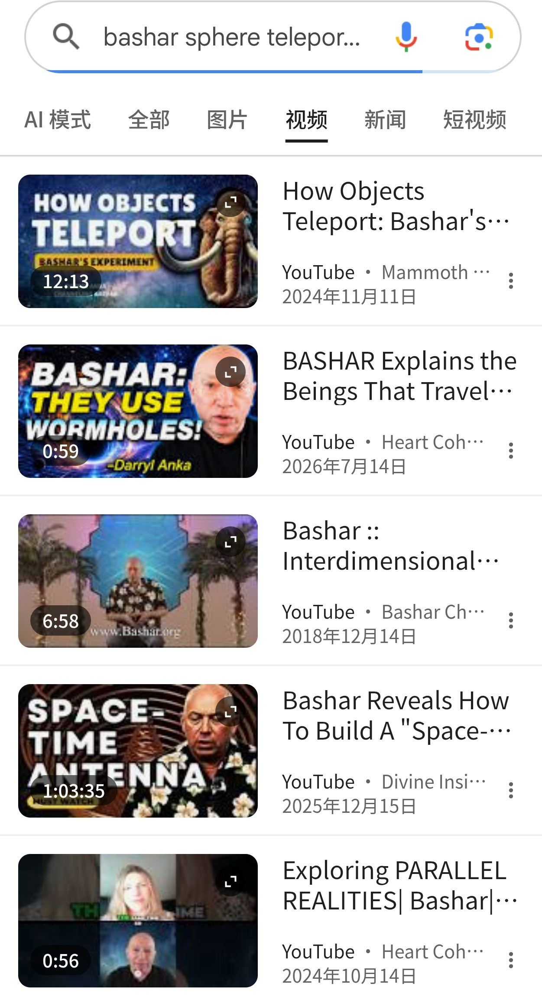
整套巴夏科技体系都从三条公理展开。读它时必须把三类东西严格分开，否则会把叙事当技术、把技术当事实——这是可行性报告里踩过的第一个坑。
物质是「原初能量」的特定振动变体。原初能量有一个背景频率，其他一切都是它的显化。
位置不是物体「存在于其中」的东西，而是物体能量方程里的一个变量。它可改写。
飞船有知觉，驾驶靠意识连接，技术是意识与物质的结合。
| 层 | 陈述 | 状态 | 可否检验 |
|---|---|---|---|
| 第一层 可检验的 物理陈述 |
同一球在桌面 A、B 两处的共振读数存在可测差异 | 假设 H1 | 能。需先做两端基线并排除环境泄漏 |
| 施加 B 端振动后，球产生定向净位移并停在 B | 假设 H2 / H3 | 能。需假信号、盲目标、净力测量 | |
| 球到达后「轻微波动一下然后停下」 | 现象描述 | 能。判据需自定为速度/位置阈值 | |
| 第二层 机制解释 |
该差异代表「位置本身的振动特征」 | 解释性主张 | 间接。可看效应是附着于坐标还是附着于硬件 |
| 位置是物体的属性，不是容器 | 本体论主张 | 不可直接检验 | |
| 第三层 宇宙论 / 叙事 |
该原理用于外星飞船瞬时传送；科技领先 3000 年 | 叙事 | 不可检验。绝不进入验收标准 |
它是巴夏给的唯一一个能在桌面尺度、用现有仪器检验的主张。其余主张（隔离场、微波光壳、零点能）都要求「3000 年后的技术」。巴夏自己点明了这个降维关系：
"This is what we do with our spacecraft except we do it on a much higher frequency and much more instantaneously."
——这就是我们对飞船所做的，只是我们是在高得多的频率上、而且瞬时得多地做。
同一实验在巴夏传讯中出现过两次，详略完全互补。只读 2017 版会得出「巴夏没给尺寸」的错误结论。
Essassani transmissions（superphysics.org 归档）
缺：没描述球是否真会滚
传讯会《The Structure of Existence》（igod.tw Jimmy 译）
缺：完全没提尺寸
做实验前必须锁定的逐字要求。R3、R4、R8、R12 四条此前常被漏掉。
| 编号 | 要求原文关键词 | 含义 | 出处 |
|---|---|---|---|
| R1 | hollow sphere of conductive material | 空心导电球（铜或钢） | 1998 |
| R2 | thin but solidly made, cannot be dented | 薄，但结实到不可压凹 | 1998 |
| R3 | anywhere from 3 to 6 in in diameter | 直径 3–6 英寸（76.2–152.4 mm） | 1998 |
| R4 | no more than 1/16th of an inch in thickness | 壁厚 ≤ 1.59 mm | 1998 |
| R5 | highly balanced as spherical as you can | 高度平衡、尽可能球形 | 1998 |
| R6 | as little friction as possible | 与表面间摩擦尽可能小 | 1998 |
| R7 | at least … 10 of your feet in length | 平面长度 ≥ 10 英尺（3.048 m） | 1998 |
| R8 | three of your feet would be comfortable | 平面宽度约 3 英尺更舒适 | 1998 |
| R9 | isolated chamber … from any other vibrations | 置于隔离舱，隔离一切外部电磁振动 | 1998 |
| R10 | at one end … move it … See if there is a difference | 一端测 → 移另一端再测 → 比较 | 1998 |
| R11 | not leaking in … not the vibration of the sphere itself | 排除「外部泄漏」与「球自身振动」 | 1998 |
| R12 | for now you can begin with an acoustic beacon | 声学波束优先，电磁可后加 | 1998 |
| R13 | the sphere begin to roll … come to a stop | 施加 B 后球应滚向 B 并停下 | 1998 / 2017 |
| R14 | location is a property of the object | 位置是物体的属性 | 1998 / 2017 |
| R15 | much higher frequency and much more instantaneously | 飞船以更高频率、瞬时得多地做同一件事 | 1998 / 2017 |
频率范围 · 声压级 · 模态阶次 · 位置坐标容差 · 停止判据 · 采样率 · 温度 · 场地电磁谱 · 球的自重 · 桌面材料
这些空白不是遗漏，而是必须由工程师补齐的部分——第 7 章「规格」填的就是这些。
其中「桌面材料」最容易被误当成巴夏的要求：1998 年提问者专门问过「那块板或底面材料」，而巴夏只答了长度与平整度，一个材料词都没给——专项核查见 第 6 章。
把原话逐字翻译成装置。注意：巴夏要的是「两端读数有差异」，不是「球滚起来」——球滚动是第 6 步，前提是第 5 步真的测到了差异。
"an object cannot exist in a space it is not the signature vibration of in matching harmony"
物体无法存在于一个与它振动特征不匹配谐和的空间，它必须去到它所是振动的那个空间。
这是个同义反复式的前提，不是可推导的结论。实验要检验的正是这个前提本身。
这是本页唯一不来自项目档案、而来自外部检索的章节。要回答的是一个具体问题：有没有人已经测量过钢球／铜球在不同地点的频谱？ 结论分四块——两块「有人做过但对象不同」，一块「科学界早就测过位置→频率」，一块「真的无人做过」。
巴夏命题的字面版本是「同一个物体，换个位置，特征频率就不同」。而这件事在主流物理里不仅成立，还已经被测到 0.2 毫米的高度差——只是机制不是「位置变量」，而是引力势。
| 实验 | 年份 | 位置差 | 相对频移 Δf/f | 机制 |
|---|---|---|---|---|
| Pound–Rebka | 1959 | 22 m | ~2.4×10⁻¹⁵ | 引力红移 |
| Gravity Probe A | 1976 | 10 000 km | ~1×10⁻¹⁰ | 引力红移 |
| NIST 铝离子钟 | 2010 | 33 cm | 3.6×10⁻¹⁷ | 引力红移 |
| JILA 锶晶格钟 | 2022 | 0.2 mm | ~1×10⁻¹⁹ | 引力红移 |
| 本项目（巴夏版） | — | 3.048 m | 引力项仅 3×10⁻¹⁶ | 未知 |
同：都是「同一振子在不同位置频率不同」。
异 1｜方向：引力红移是单调、连续、可计算的——升高一定变快，公式 Δf/f = gΔh/c²。巴夏的「位置签名」没有任何方程、方向、量级。
异 2｜量级：本项目桌面 3 m 落差的引力项只有 3×10⁻¹⁶，而且是在一整台钟的高度上——不是在一只铜球的机械共振上。铜球的本征频率对高度不敏感（见第 5 章）。
异 3｜可预测性：原子钟实验是「按公式做、必然测到」；铜球实验是「按原话做，很可能只测到噪声」。
如果说有谁做过「用一颗钢球在平板上滚，去探测位置／时间相关的异常」，那就是法国人 Maurice Allais（1988 年诺贝尔经济学奖得主）。他的仪器在构造上与我们的装置同构：
👆 那台地下并联装置，就是「隔离舱」的 1950 年代版本——目的正是回答「你的结果是不是热／振动伪影」这个质疑。
Allais 认为只能引入「一种新场」来解释，主张空间是各向异性的（存在类以太流）。这就是「Allais 效应」。
此后 70 年被反复复现与质疑：
① 方法论可继承：换球、换板、地下并联、连续链、昼夜不停——这些正是我们要做但成本高的事，他 70 年前就做全了。
② 结局是警示：一个设计了地下隔离、换件排除磨损、连跑 6 个月一个月的实验，最后仍然没能把效应从系统误差里干净地分离出来。它至今停留在「有争议」。
③ 所以：本项目的价值不在于「跑出球动」，而在于把不确定度压到能被同行审阅的水平——这也是三阶段方案里第 3 阶段（多中心盲测）存在的理由。
巴夏的装置里，双锥螺旋铜线圈（Spacetime Antenna）真有人做了，而且做得很认真。但这些复现不能借来当铜球实验的依据——原因见下表。
| 时空天线 STA（有人做 ✅） | 铜球位置频率实验（无人做 ❌） | |
|---|---|---|
| 对象 | 双锥螺旋铜线圈（+ 有时套铝四面体） | 空心导电球 |
| 自变量 | 线圈几何、圈数、线径、激励方式 | 球所处的位置 |
| 测量量 | 输出电压／功率（pW – mW） | 特征振动频率／Q 值之差 |
| 控制变量 | 环境电磁背景、激励源稳定性 | 温度、倾斜、声流、Q 泄漏、地磁…… |
| 结论能否互借 | 不能。对象不同、变量不同、测的量不同——STA 的输出功率与「位置是不是物体的属性」无关。 | |
检索时间：2026-09-21 检索范围：英文 + 中文公开网络
| 检索词 | 命中 | 是否为目标实验 |
|---|---|---|
| Bashar hollow conductive ball steel copper experiment 10 feet table resonance location | igod.tw 原话页（2017 中英对照）、Kundt 管、驻波、共振教学页 | 否 |
| "hollow conductive ball" sphere rolling 10 foot table experiment Bashar anyone tried | 只有原话转载；Betz 神秘球；Magdeburg 半球；滚球比赛；空心/实心球惯性教学 | 否 |
| bashar spacetime antenna replication experiment results community coil build | ThreeDrop / Thingiverse STL、basharspacetimeantenna.wordpress.com、GrabCAD 模型 | 对象不同（STA 线圈） |
| sphere resonance frequency difference different location experiment teleportation | Schumann 共振科普、声学谐振腔、resonantfractals 球体实验笔记 | 否 |
| "巴夏" 铜球 实验 有人做过 复现 位置频率 | Betz 金属球（中文报道）、液压半球、Barton 摆、Cavendish | 否 |
| Allais paraconical pendulum ball flat surface 1954 anomaly | 视差摆词条、Allais 效应复现史 | 最接近的先例 |
| atomic clock gravitational redshift NIST 33 cm | ScienceDaily / PBS / LiveScience / AZoQuantum | 「位置→频率」真实案例 |
⚠️ 说明：网络检索不能穷尽所有未公开的私人实验。严格表述应为「未见任何公开复现记录」，而非「绝对没人做过」。这与巴夏本人 2017 年的说法一致。
没有既有的成功案例可以参照，也没有既有的失败报告可以借鉴——意味着不存在「照着别人的做法再来一遍」这条捷径。
所有基线、误差模型、判据都要自己建。这就是这个实验真正的成本，也是它真正的价值。
这是「球自己在平桌上动了」类报告的教科书样本，情节几乎和巴夏实验的民间想象重合。它被列在这里，是因为它记录过的每一类「异常」，在本项目里都能找到一个平凡成因与之对应。
正因为「球自己动」有太多平凡的成因（桌面微倾、气流、静电、残余磁矩、观察者干预），所以本项目不把「球滚起来」当第一目标，而是先做第 3–5 步：测频率、排除泄漏、报出测量上限。
顺序不能颠倒。先证明「我们测不出差异，且能说明为什么」，再谈让球滚。
前面三节是「他们做了什么」。这一节是「我们能拿走什么」。先看三方并排——很多看似不相关的差异，其实指向同一个方法学分歧。
| Allais 视差摆 1954–60 | NIST / JILA 光钟 2010–22 | 本项目（巴夏版） | |
|---|---|---|---|
| 被测振子 | 12 kg 摆 + Ø6.5 mm 钢球支点 | 单个 Al⁺ 离子 / 10⁵ 个锶原子 | 空心导电球壳的机械模态 |
| 「位置」的定义 | 相对地轴的方位角 | 高度（引力势 U = gh） | 相对桌面的水平坐标 |
| 测量量 | 摆动椭圆的方位角 | 原子跃迁频率 f | 模态频率 f₀、Q、衰减时间 τ |
| 位置差量级 | —（效应即观测量） | 33 cm / 1 mm | 3.048 m（10 ft） |
| 对应的 Δf/f | 无预期值 | 3.6×10⁻¹⁷ / 1.1×10⁻¹⁹ | 未知 |
| 仪器相对分辨 | ~10⁻⁴ | 10⁻¹⁸ – 10⁻²¹ | ~10⁻⁶（f₀=100 Hz、T=100 s） |
| 有无已知机制 | 无（他主张新场） | 有（广义相对论） | 无 |
| 主要污染源 | 温度、气流、支点磨损、地质微动 | 电磁场、黑体辐射、激光频率漂移 | 温度、支撑、声、Q 泄漏、倾斜 |
| 参照系靠什么稳住 | 地下 + 真空 + 恒温 | 锁频 + 隔振 + 真空 | 机械限位（最脆弱的一项） |
| 最终状态 | 争议 70 年，无共识 | 已成都市计量基础设施 | 未做 |
三者问的是同一个问题：同一个振子换个地方，读数是否不同？这是一个可陈述、可设计实验、可被拒假的物理命题——不是信仰问题。这一条是把本项目从「传讯内容」搬进实验室的全部合法性来源。
光钟测的是频率比值而非各自绝对值 → 激光频率、腔漂移、温漂在比值里自动消掉；本项目用双球交换法（§7.4）消掉球的个体差异；Allais 用周期而非绝对值作判据 → 对慢漂移免疫。
这是同一个方法学母题：在测量任何物理量之前，先证明「什么都没发生时你的仪器也不动」。NIST 会先测两台同样的钟并置时的频差作为本底；Allais 每轮换球、每周换板，正是为了把「磨损的漂移」与「真实效应」分开。本项目对应的是 sham 假处理——见 4.7。
光钟有公式 Δf/f = gΔh/c²，实验是「按公式做、必然测到」——他们知道自己要找多大的信号，因此能计算「需要多少积分时间」。本项目没有方程、没有方向、没有量级，所以不能正着做，只能反过来做：先把不确定度压到某个上限，再诚实报告「在此之上未见效应」。
这就是 §5「未检出也是科学结果」那条纪律的出处。
原子钟怕的是场噪声（电磁场、黑体辐射、激光漂移）→ 屏蔽与锁频能解决。球壳模态怕的是机械与热噪声（温度、支撑、桌面声学、Q 泄漏）→ 屏蔽救不了。
关键数字：铜腔 16.5 ppm/K、机械模 −150 ppm/K。1 mK 温漂即 1.65×10⁻⁸ 等效频移，比拍频法灵敏度劣 4 000 倍（§5 那张条形图）。NIST 从不需要面对这个量级的温漂问题。
光钟 10⁻¹⁸–10⁻²¹（亿元级设备、十年积累）对 本项目 ~10⁻⁶（一张桌子）。所以「用机械球测引力红移」绝无可能——1 m 落差的引力红移只有 1.1×10⁻¹⁶，比我们的分辨能力小 10 个数量级。
但分界线很清楚：凡是「消除系统误差」的方法论，与灵敏度无关，可以整段继承；凡是依赖极限灵敏度的技术（锁频、超高真空腔），与我们的量级无关，不必模仿。
| 来源 | 他的做法 | 本项目的对应动作 |
|---|---|---|
| A · 从 Allais 学（工程与观测纪律） | ||
| A1 | 每轮换球、每周换承板，排除磨损 | 记录球的编号与放置位置；至少第一轮做「换球重复」——把「器材老化」从「位置效应」里剥出来 |
| A2 | 57 m 深矿坑里并联第二台装置，反「同源故障」 | 第二套传感器或第二张桌子放在另一个房间同步运行。两台都看到的，才可能是真的 |
| A3 | 每 20 分钟一次、昼夜不停、连跑一个月成一条连续链 | 用长时间连续采集代替「偶然一次的漂亮数据」——统计量只能用时间换 |
| A4 | 用周期（太阴日 24 h 50 m）而非单点异常作判据 | 把 A/B 交替的配对差做成时间序列，看它有没有结构。周期对慢漂移免疫，单点异常对慢漂移毫无抵抗力 |
| A5 | 公开原始记录曲线 | 原始数据 + 完整误差预算表一起公开——这是唯一能让第三方独立复核的形式 |
| B · 从 NIST／JILA 学（计量学方法，与灵敏度无关，可整段搬） | ||
| B1 | Schawlow 原则：「永远只测频率」never measure anything but frequency | 频率是唯一能被测到最准的物理量——幅度受增益漂移影响，频率不受。与 §7.4「把灵敏度搬进相位」同源，是本案第一条方法论 |
| B2 | 测比值 f_A / f_B，不测各自绝对值 | 共模漂移在比值里自动消掉。双球交换法是同一招；更可进一步——同时测两只球（而非轮流）做实时比值 |
| B3 | self-interleaved（自交替）测量 | 🔴 本项目必须用 A-B-B-A，不能用 A-A-B-B。交替使 A、B 的平均采样时刻重合，线性漂移完全抵消（证明见下图） |
| B4 | 主动调制系统误差（modulating systematics） | 把某个误差源在两次测量之间反向（如反转磁场方向、上下颠倒放置），相减即消——而不是事后修正 |
| B5 | 过夜运行减少热瞬变；每天先测一次环境温度 | 稳态比瞬态可预测；环境量必须每次记录而非假设。球壳温度系数 −150 ppm/K 比一切待测效应大几个量级 |
| B6 | 把每个系统误差换算成等效频移，列成表管理 | 只有统一量纲才能判断「谁是瓶颈」。这就是 §8 误差预算表（1 mK → 1.65×10⁻⁸…）的直接来源 |
| B7 | 先做「两台同样的钟并置」的零差测试 | sham 假处理：球原地拿起放下 N 次；传感器换位而球不动；完整空跑一遍流程 |
| C · 从 Harmonograph 学（读数器：把「比频率」换成「数时间」） | ||
| C1 | 近同频拍的两个信号叠成 Lissajous 图，图形进动的周期 = 1/Δf | 读数方式升级：从「比频谱峰位」改成「数进动周期与回卷数」。这与 B1 的 Schawlow 原则同源——时间是唯一能被测到最准的量，把频率差换成时间来数 |
| C2 | 「放大」有上限，不是任意小都看得见 | 🔴 差值的可用区间要事先写死：进动法约到 10⁻⁶ 相对频差为止，再小必须换手段（相位锁定／频率计数器）。先写死上限，才不会拿伪影去填那段看不见的区间 |
| C3 | 先证「这一阶模」，再比频率 | 建 8×6 模态灵敏度矩阵，做模态识别、盲点检查、秩检查。盲点上的点测不到那一阶模；秩不够必须补点挪点，不能靠信号处理补 |
| C4 | 伪影有三种固定「图形签名」 | 判伪口诀：固定畸变 = 校准；单向漂移 = 温度／接触；同向同步 = 参考源。真效应必定是位置相关的——换个位置才出现，换回来就消失 |
① 没有盲测：他自己既是操作者、又是分析者、还是结论的主张者。
② 没有预注册：判据是事后从数据里「看出来」的，不是事前写死的（对比：JILA 每次比对前会先固定分析流程）。
③ 没有误差预算表：他从没把「1 ℃ 温漂对应多少方位角」这类换算列成表 → 因此无法排除，只能停留在「有争议」。
所以本项目三条前置纪律是反着他来的：先写死判据（§6）、先列误差预算（§8）、把盲测排进第三阶段。这不是保守，这是前人用 70 年时间买来的教训。
设真实读数 y(t) = y₀ + a·t + δ·[本次在 B]，其中 a 是漂移斜率（未知），δ 是我们要找的位置效应。
取四等间隔时刻 t₁=0、t₂=1、t₃=2、t₄=3，则
而块设计 A-A-B-B 用 t₁,t₂ 测 A、t₃,t₄ 测 B：
推广：任何平衡设计（每个水平的采样时刻关于同一中心对称）都能消掉线性漂移，对更高次的奇数项项也有抑制作用。这就是「控制实验变量」在数学上的确切含义——顺序本身就是变量。
巴夏原话给的是一个固定实验：同一高度、两个水平位置。但一个实验只能给出一个数，它回答不了「这个数属于哪一类效应」。把变量系统展开，数据才能自己说话。
引力红移在 1 m 落差上只有 1.1×10⁻¹⁶（g/c² = 1.09×10⁻¹⁶ per metre），而本项目在 Ø80×0.4 球壳上的最佳相对频率分辨约 10⁻⁶ 量级——比它小 10 个数量级，绝无可能测到。
所以垂直方向那组实验的意义是反过来的：它不提供信号，它提供一个「应该为零」的对照。而这个零，恰恰是整个矩阵里信息量最大的一次测量——理由见下面第 ①② 条。
| 编号 | 改动什么 | 保持不变 | 若命题为真的预期 | 它能排除什么 |
|---|---|---|---|---|
| 第一层 · 先立本底（0 成本，最重要） | ||||
| S0 sham | 完整走一遍流程，但不换位置（原地拿起→放下；传感器换位而球不动） | 球、板、温度、时间 | 零（差值应在噪声内） | 流程本身的系统性影响、仪器漂移、搬运扰动 —— 没有这一步，后面所有数值都无法解释 |
| 第二层 · 主实验：巴夏原版（同高度，换水平位置） | ||||
| X1 水平位移 | x₀ → x₁（同高度 h₀） | h₀、球、板、传感器、朝向 | Δf ≠ 0（主实验） | —（这是唯一的待检验命题） |
| X2 水平位移·远 | x₀ → x₂（更远，同高度） | 同上 | 效应随距离的标度律 | 区分「阶跃型」（只要换了地方就变）与「渐变型」（随距离单调变化） |
| X3 水平位移·方向 | 同一距离，换到另一个方位（如东 → 北） | 距离、高度 | 若是各向异性场 → 应有方位依赖 | 把「距离依赖」与「方向依赖」分开 |
| 第三层 · 结构对照：只改一个正交变量 | ||||
| Z1 高度（同水平位置） | h₀ → h₀+Δh，x 完全不动 | x、y、球、板、朝向 | 应当为零（引力项仅 1.1×10⁻¹⁶/m，测不到） | 劈开「位置」这个词：见 ① —— 本矩阵信息量最大的一步 |
| Z2 高度·换支撑方式 | 用同一块板 + 不同垫块改变高度（而非换桌子） | 板、球、环境 | 同上，零 | 把「重力方向效应」与「支撑几何效应」分开 —— 这就是「控制变量」的具体含义 |
| M1 材料 | 铜 → 钢（同尺寸、同位置） | 位置、几何、外径、壁厚 | 若依赖导电性 → 应明显减弱 | 是否电磁起源（铜 ≥98% IACS，钢导电差得多） |
| M2 非导电球 | 铜 → 同尺寸非导电球（树脂/陶瓷；质量按需配平） | 位置、几何、质量 | 若依赖导电 → 应消失 | 最干净的一条：把「导电」这个变量从「位置」里拆出来，第一次触到机制方向 |
| T1 壁厚 | 0.4 → 0.8 mm（同材料、同外径、同位置） | 位置、材料、外径 | 若效应改变模态频率 → 应按 f 的比例同步移动 | 效应是「改频率标尺」还是「改结构本身」 |
| 第四层 · 环境与通道（查污染源，兼做交叉验证） | ||||
| E1 电磁屏蔽 | 加法拉第笼 + 坡莫合金罩 | 位置、球、温度 | 若效应消失 → 是环境电磁污染 | 外部电磁场（STA 类耦合） |
| E2 换传感通道 | 同一次位置移动，用光学/声学通道同时测（§7.2） | 位置、球 | 三条链路给出同一频移 → 交叉验证成立 | 单一仪器的耦合假象（这是最有力的排除） |
| W1 自转状态 | 让球缓慢自转 / 保持静止 | 位置、材料、支撑 | 若与角动量有关 → 应有差异 | 残留磁矩与自转的耦合 |
| R1 回到原位 | 全部回到 x₀, h₀（与 X1 同一位置） | — | 应复现 X1 的读数 | 漂移 vs 真实位置依赖（这条是 X1 能否成立的前提） |
| 第五层 · 几何与尺度（后期升级实验，完整设计见 第 13 章） | ||||
| G1 几何形状 | 铜球 → 空心铜正方体／正四面体／不规则体（同材质、等体积 R_V、同壁厚） | 材质、等效尺寸、壁厚、位置 | 按某一等效半径归一后，ε_loc 坍缩到同一条线 | 「位置频率」是物体的普遍属性，还是球对称专属——命题的边界 |
| G2 尺寸标度 | Ø40 ／ Ø80 ／ Ø160（保持 t/R 不变） | 材质、形状、薄度、位置 | f ∝ 1/R；Δf 的幂律指数 p 定出加性 or 乘性 | 位置项是「加性常数 δf_loc」还是「比例因子 1+ε_loc」 |
| I1 表面导电性 | 同一只绝缘薄壳球贴铜箔 ／ 不贴（A-B-A 自身对照，几何与质量全不变） | 几何、质量、材质、位置 | 贴与不贴给出同一 ε_loc | 机制是否含导电路径（涡流／镜像电流） |
因为它把「位置」这个词劈成两半，而只需要搬一次：
把 X1 与 Z1 的结果并排，就能反推效应的几何形状：
三个数，定出效应的几何。这是任何单个实验永远给不出的信息——也是「多组对比」真正的价值所在。
球壳的模态频率对支撑条件极度敏感——放桌上的点接触、软接触环、悬挂，给出的是不同的边界条件与不同的 Q。
而「换高度」这件事，天然会连带改变支撑：
这正是 Z2 存在的理由。「控制变量」不是「尽量少改东西」，而是「让你想改的那个变量，成为唯一变了的那个」。
| # | 机制 | 具体做法 | 它治什么病 |
|---|---|---|---|
| 1 | 平衡设计（A-B-B-A） | 顺序固定为 A→B→B→A，使每个位置的采样时刻关于同一中心对称 | 线性漂移（见 4.6c 的证明） |
| 2 | 随机化 | 用随机数决定本次搬去 A 还是 B（在满足平衡的前提下打乱块序） | 顺序效应、操作者预期 |
| 3 | 盲测 | 搬运者不看记录；分析者拿到的是编码后的位置标签（K1/K2），解盲在统计完成之后 | 观察者偏差 —— Allais 缺的正是这一条 |
| 4 | sham 假处理 | 完整走流程但不换位置；另做「传感器换位而球不动」一组 | 流程自身的系统偏差、仪器慢漂移 |
| 5 | 配对检验 | 每对 A/B 先求差、再对差值序列做统计；不比较两组均值 | 慢漂移（配对把慢漂移变成公共项） |
| 6 | 功效分析定 N | N ≥ (z_α + z_β)² · σ² / δ²；σ 从 sham 实测拿，δ 取「想分辨的最小效应」 | 「做几次看看」式的数据挖掘 |
| 7 | 环境共变量记录 | 每次测量同步记录温度、气压、倾斜、声压级、电网频率 | 让「这是不是温漂」变成可计算的问题，而不是可争论的问题 |
先让「什么都不做」也给出噪声分布（S0）→ 再让「只改一个变量」给出差值（X1 + A-B-B-A）→ 最后才让「改多个正交变量」给出机制（Z1、M2、E2）。
按性价比排序的可执行顺序：
前人给的最有价值的其实不是装置图纸，而是这句纪律：「在你测量任何东西之前，先证明你的仪器在什么都没发生的时候也不动。」——Allais 做过（换球换板、地下并联），NIST 做过（两钟并置测零差），本项目要做的只是把它变成第一步。
这是全案最关键的一次视角转换：这项工作的真正内容不是「验证巴夏」，而是「用计量学把混淆源压到足够低」——让结论要么是差异，要么是一个有意义的测量上限。
平移不变性——一个物体的本征频率只由几何、材料、边界条件决定，与它摆在哪里无关。
所以按主流物理，H1 应当测不出超出不确定度的差异。球是 Ø80 mm 还是 Ø152 mm 有影响，摆在桌子这头还是那头没有。
来源全是平凡的：
桌面倾斜 · 球质量偏心 · 释放冲量 · 桌面波纹导向 · 声流与气流 · 静电与残余磁矩 · 温度梯度 · 地面微动 · 仪器漂移
你会测到差异——只是它不是你要的那个。
这是本项目最重要的量化判断。对比一下「仪器能分辨多少」和「温度漂了多少」：
拍频法已能到 3.8×10⁻¹²。不需要进口顶级设备就能获得远超所需的相对精度。
普通实验室的 1 mK 温漂、1 μrad 微倾、Q 值泄漏，任何一个都盖过真实效应几个数量级。
全部工程重心应放在恒温、隔振、真空／隔声、Q 值控制，而不是买更贵的分析仪。
如果最终测不出差异，应报告一个上限定值，例如：Δf/f < 3×10⁻⁸（95% 置信区间）。
这句话本身就是对巴夏命题的有效约束——它把「位置是物体的属性」从无限定性的主张，压缩成一条可被引用、可被超越的边界。这正是本实验能给出的最大价值。
如果难点在于「到底有没有那个效应」，这实验早该有人做了——成本看起来极低：一只球、一张桌、两端各测一次。真正拦住所有人的，是下面三道与效应本身无关的门槛。
Ø80×0.4 紫铜球自重约 90 g。与桌面点接触的接触半径只有 0.5–1 mm，接触应力轻易超过 300 MPa——而软态紫铜屈服强度只有 70–100 MPa。一定留坑。
永久压坑 = 壳形改变 = 本征频率改变。你测到的「位置频差」里，先混进了「壳形变化频差」——而后者往往更大。
壁厚不是自由参数：一头挂着屈曲（整体会不会 snap-through），另一头挂着趋肤深度（交变磁场能不能穿过壳壁）。
0.4 mm 铜壳在 1–10 kHz 对磁场近乎透明；到 50 kHz 趋肤深度只剩 0.29 mm，球壳开始变成短路环，Q 值与灵敏度一起掉。选壁厚，其实是在选频段。
材料费从来不是瓶颈（一块薄铜板几十元量级）。钱花在模具、焊接工装、激光焊外协、圆度检测上，而且一次失败就报废。
于是形成死结：不够严谨的装置，形变噪声淹没效应；够严谨的装置，投入已等同计量课题。这才是「至今没人做」的真正原因。
| 门槛 | 物理量 | 量级（Ø80 × 0.4 紫铜） | 不解决的后果 | 最省的解法 |
|---|---|---|---|---|
| ① 接触压坑 | 软态屈服 vs 接触应力 | 70–100 MPa < 300 MPa | 球底留坑 → 频率漂移 | 软硅胶／绒布环（最先做） |
| ② 整体屈曲 | 临界压力 p_cr | 理想 14.2 kPa／经验 4–5 kPa | snap-through 塌陷 | 半球深冲 + 赤道小法兰 |
| ③ 局部弯曲 | t / R | 0.4 / 40 = 0.01 | 模态频率落不进音频段 | 薄壁——这是唯一办法 |
| ④ 涡流短路 | 趋肤深度 δ | 10 kHz → 0.66 mm；50 kHz → 0.29 mm | Q 掉、灵敏度掉 | 工作频率 ≤20 kHz，或内贴坡莫合金箔 0.1 mm |
| ⑤ 焊接失圆 | 热输入 / 装配间隙 | 激光 300–500 W；间隙 ≤0.05 mm | 椭圆化 → 模态劈裂假信号 | 激光焊（优于 TIG）+ 仿形胎具分段焊 |
所以正确的前后顺序是：① 底部加软环 → ② 恒温 → ③ 隔振隔声 → ④ 再谈扫描与位置。跳过前三步直接去测「A 点 vs B 点」，测到的一定是环境，不是位置。
误差量级与预算见 第 8 章；「球做多大、多厚、怎么造、花在哪」见 第 7 章 7.1b–7.1d。
前三道门槛都在「装置」上，第四道在读数方式上：即使装置做得完美，任何一把尺也只在一段有限的量程内有效。
本项目选用的 Harmonograph 进动法（见 7.5），有效区间到约 10⁻⁶ 相对频差为止——再小的差，它给出的只会是漂移，不是读数。所以开工前必须先回答：「我要找的那个效应，落在这一格之内还是之外？」落在之外，就得换尺，而不是加倍努力。
把可测范围事先写死，是这套实验与 Allais 那 70 年最本质的区别——它让「测不到」成为一个可发表的结果，而不是一段永远说不清的争议。
思路是先把测量能力建起来，再找效应，最后接受同行审阅。任何一跳都不可省——跳到第 3 步而没有第 1 步，结果必然无法解释。
阶段一不是「验证巴夏」，而是建工厂：先把两件实物做出来——一只够格的铜球、一张够平的桌面——再叠加隔离、基线与 SOP。下面把这两件的规格来源拆开讲：哪些是巴夏给的，哪些是我们自己补的。
| 阶段一实物 | 本项目选型 | 巴夏原话给了什么 | 我们自己补了什么 |
|---|---|---|---|
| ① 铜球 | Ø80 mm × 0.4 mm 无氧铜 TU1（半硬态）；另备 3 只同规格 + 2 只对照球 | 直径 3–6 in（76.2–152.4 mm）、壁厚 ≤1/16 in（1.59 mm）、空心、铜或钢、高度平衡、尽可能球形、与支撑面摩擦尽可能小 | Ø80 × 0.4 这个具体点、牌号 TU1、半硬态、圆度 ≤0.02 mm、底部 Ø6 mm 微平面 —— 见 7.1b–7.1d |
| ② 超平桌面 | 3.20 m × 0.90 m × 0.20 m 细晶花岗石或人造陶瓷参考平板；平面度 ≤10 μm（全量程）；阶段一倾角 <10 μrad | 长度 ≥10 ft（3.048 m）、as flat as you can make it（尽可能平）、宽度不必那么宽、但 约 3 ft 会更舒服 | 材料完全由我们选（巴夏从未提桌面材料，见下）；「≤10 μm」「<10 μrad」这两个量化门槛；3.20 m 的两端超程余量 |
| ③ 隔离舱 | 隔绝一切外部电磁与机械振动；双层电磁屏蔽；地下或低楼层 | isolated chamber：isolated from any other vibrations electromagnetic in nature other than the ones you wish to impose | 具体屏蔽结构；0.1–200 Hz 振动监测；地线路径记录 |
| ④ 基线与 SOP | ≥30 min 无激励基线；静息滚动率分布；预注册 + 盲分析 | 仅一句原则：double check to make sure that the difference you may find is not the product of something leaking in | 全部（这是计量学部分，原话没有） |
1998-02-28 那次传讯里，提问者专门问过这件事，而且问句里明确带了「材料」这个词：
巴夏的回答里 一个材料词都没有，只给了三条与几何有关的约束：
① 长度 at least 10 ft（≥3.048 m） ② as flat as you can make it（尽可能平） ③ 宽度 need not be that wide，但 three of your feet would be comfortable（约 3 ft 更舒服）
检索范围与结果（可复核）：1998-02-28 英文逐字全文 + 2017 版转录 + 本归档 110 篇 —— 全部含 flat surface / flat bed / flat table / surface upon which 的段落里，桌面材料词（wood / metal / granite / glass / stone …）出现 0 次。外网检索同样未见巴夏在任何场次规定过桌面材料。
金属桌面会与空心导电球形成涡流／镜像电流耦合，直接改变球的模态——而被改变的这个量，正是你要测的东西。等于把被测对象短路了。
在 3.048 m 长度上，热膨胀与蠕变会直接变成「位置漂移」。这张桌子同时是支撑与长度基准，它自己必须先稳定下来。
超平硬面是强声反射面，会改变薄壳的辐射阻尼、进而改变 Q 值。要么明确反射并可建模，要么明确吸收——不能是说不清的边界。
| 候选桌面材料 | 热膨胀 | 平面度可达 | 声学边界 | 电学 | 结论 |
|---|---|---|---|---|---|
| 花岗石／陶瓷参考平板 | 低 | ≤10 μm 级（行业参考平板标准） | 强反射、稳定可建模 | 绝缘 ✓ | 首选 |
| 光学玻璃 | 低 | 极高 | 强反射 | 绝缘 ✓ | 次选（大尺寸难做、脆） |
| 铸铝／钢板 | 高（铝约 23 ppm/K） | 中 | 反射 | 导电 ✗ 涡流耦合 | 不宜作参考面 |
| 木材／MDF | 高（吸湿变形） | 低 | 强吸收 | 绝缘 | 只作底衬减振，不作参考面 |
| 亚克力板 | 高 | 低 | 中等 | 绝缘 | 只作隔声罩／屏蔽箱 |
「桌面材料」是巴夏留下的自由变量，由工程判据决定，而不是由原话决定。选花岗石／陶瓷的理由全部来自计量学：绝缘（不与球涡流耦合）+ 低热膨胀（长度基准稳定）+ 可加工到 10 μm 平面度。
而原话里真正被硬性强调的其实是「隔离舱」——isolated from any other vibrations electromagnetic in nature。这比桌面材料严厉得多，也解释了为什么阶段一的预算大头在环境与测量，而不在那张桌子上。
| 级别 | 判据 | 性质 |
|---|---|---|
| ① 规格达标 | 平面度、倾角、球几何、滚动阻力、声场均匀性全部实测达标 | 工程前提 |
| ② 基线可复现 | A/B 频谱差 超出不确定度，且交换球的位置后可复现（双球交换法） | 科学观察 |
| ③ 主动响应 | 主动信号产生的定向净位移 > 5 倍合并标准差；盲目标命中显著；关掉信号位移即消失 | 因果证据 |
| ④ 外部复现 | 两个独立实验室复现出同方向、同量级的效应 | 共同体承认 |
为了避免事后挑数据，停止条件必须事先写死：
意义：把巴夏原话里含糊的「轻微波动一下，然后停下」，翻译成可被第三方重新计算的数值条件。
水平控制 · 同步记录 · 球体 CT 检测 · 外部顾问复核
三维声场标定 · 电磁屏蔽 · 独立数据分析方
独立设施 · 开放数据 · 审计 · 明确的停止条件
第 2 章列了巴夏没规定的 10 个自由变量。这一章就是项目档案对这些空白的填法——注意：这些是我们的设计，不是巴夏的话。
此前方案曾把 25.4 mm（＝1 英寸）当工艺自定值使用。这是错的：巴夏给的是 3–6 英寸 = 76.2–152.4 mm，25.4 mm 比下界还小 3 倍，完全在区间之外。
目前 25.4 mm 只保留一个用途：作为微波腔对照小样（TE₁₁ 模约 5.2 GHz）。它不是本路线的主力球。
错误根源：没有先分清「巴夏给了什么」（第一层）与「我们自己补什么」——见 勘误与修订文档。
| 项 | 巴夏原话 | 本项目选型 | 理由 |
|---|---|---|---|
| 直径 | 3–6 in (76.2–152.4 mm) | Ø80 或 Ø100 mm（工艺规范 v3.0 取 Ø80） | 贴近下界，质量与频率便于处理 |
| 壁厚 | ≤ 1/16 in (1.59 mm) | 0.4–0.6 mm（取 0.4） | t/R = 0.01，把弯曲模压进音频段 |
| 主球材料 | copper / steel | 无氧铜 TU1 / TU2，或低磷脱氧铜 SW-Cu / Cu-DLP | 导电率高、可焊、球形度好 |
| 对照球 | — | 304L / 316L（钢球首选 305L） | 不同材料/阻尼对照，排除材料单一性 |
| 形位公差 | highly balanced, as spherical as you can | 圆度 ≤ 0.02 mm；壁厚差 ≤ 0.02 mm | 质心偏心是最大的伪位移源 |
「多大、多厚」不能拍脑袋——有 5 个约束互相拉扯。下表把它们拉到一起，Ø80 × 0.4 是这 5 个约束的交集里最便宜的那一点。
| 约束 | 它推着你往哪走 | 量化依据 |
|---|---|---|
| 要装下 8 个线圈 | 球要大 | Ø80 外径 → 内径 79.2 mm、容积约 258 cm³；8 个 Ø10–15 mm 线圈放得下且互不干涉 |
| 弯曲模要落进音频段 | 球要小、壁要薄 | f_弯曲 ∝ (t/R)·f_ring；t/R = 0.01 → 预期 60–230 Hz（Ø80 × 0.4） |
| 放桌上不许留坑 | 壁要厚，或改接触 | 软态紫铜必出坑 → 改走 半硬态（屈服 ≥200 MPa）+ 底部 Ø6 mm 微平面，比加厚便宜得多 |
| 磁场别被球壳短路 | 频率别太高 | 趋肤深度 δ：10 kHz → 0.66 mm；50 kHz → 0.29 mm（小于 0.4） → 50 kHz 以上壳壁成短路环 |
| 巴夏给的尺寸区间 | 不能小于 3 in | 原话 3–6 in = 76.2–152.4 mm；Ø80 贴着下界（25.4 mm 方案已勘误作废） |
| 频率 | 趋肤深度 | vs 0.4 mm 壁 | 含义 |
|---|---|---|---|
| 1 kHz | 2.07 mm | >> 0.4 | 磁场近乎全穿透，涡流损耗可忽略 |
| 10 kHz | 0.66 mm | > 0.4 | 仍有部分穿透，可接受 |
| 50 kHz | 0.29 mm | < 0.4 | 电流集中表层，开始当短路环 |
| 100 kHz | 0.21 mm | << 0.4 | Q 值与灵敏度明显下降 |
δ = √(ρ/(πfμ₀μr))，紫铜 ρ ≈ 1.72×10⁻⁸ Ω·m、μr ≈ 1。结论：0.4 mm 紫铜的舒适区是 ≤20 kHz；要更高频，须内贴坡莫合金箔，或改用高电阻率材料。
整体屈曲不是主要风险（90 g 自重远达不到 4–5 kPa 对应载荷）；局部压坑才是——这也是第 5 章把「改接触」排在「加厚」前面的原因。
| 路线 | 材料牌号 | 规格 | 关键工艺 | 强项 | 代价 |
|---|---|---|---|---|---|
| ① 单材料铜 先做这个 | 无氧铜 TU1／TU2，或低磷脱氧铜 SW-Cu／Cu-DLP，半硬态 | Ø80 × 0.4 mm | 软态深冲两半 → 冷作 10–15% 半硬化 → 激光焊赤道 → 200 ℃ 去应力 → 底部磨 Ø6 mm 微平面 | 导电最好（≥98% IACS）、紫铜外观、可焊性成熟 | 软态必出坑（须半硬 + 改接触）；激光焊需外协 |
| ② 磷青铜 抗坑优先 | C51000／C52100 | Ø80 × 0.35–0.4 mm | 同上，焊接以软钎／银钎／激光点焊为主 | 屈服 380–620 MPa，抗压坑最强 | 导电仅十几～二十几 %IACS；铜磷钎缝偏脆 |
| ③ 钢球 不必导电时 | 304L／316L；深冲性最好用 305L；要更硬可选 301B（1/2H） | R 30–50 → t 0.3–0.5 mm | 两半深冲（LDR 1.8–2.2）→ 切 0.4 mm 法兰边 → 脉冲 TIG 或激光 → 150–250 ℃ 低温消应力 | E ≈ 193–200 GPa，同厚度更抗屈曲；料便宜、易焊 | 导电差；须防锈；深冲道次多 |
| ④ 双金属夹层 极薄展示 | 外铜 0.15–0.2 + 内钛／不锈钢 0.1–0.2 | 总 0.3–0.4 mm | 分别成形 → 银基／AgCuTi 真空钎 → 外皮激光封赤道 | 刚度 ≈ 单层 0.4–0.5，外观仍薄 | 铜–钛会生成脆相；门槛高，首件不建议做 |
铜磷钎料禁用于钢件——磷与铁会生成脆性相。铜–铜之间可以自钎（纯铜甚至免钎剂），铜–钢、铜–不锈钢则必须换银基钎料或加镍中间层。
三套「可直接试」的小样（出自补充对话）：A 单铜 0.4 mm 半硬 + 底部微平面；B 外 TU1 0.15 + 内 C52100 0.2（或全 C51000 0.35）；C 外铜 0.1–0.15 电铸／旋压 + 内钛箔 0.1（首件不要做）。
加厚要重做模具、增重量，还可能把弯曲模推出音频段。一圈硅胶／绒布环的成本可以忽略，却把「必出坑」变成「看不出来」。
只在需要承接触的地方加厚（底部拼接处 0.6–1.0 mm 法兰环），全球重量不增加。焊接时法兰还能当散热与定位基准。
深冲模具是一次性大头支出。先用标准薄壁铜管等厚旋压（等厚工艺 + 超声振动 + 滚动研磨两段法），或直接买无焊缝成品球坯，可绕开模具费——代价是设备门槛换成工艺门槛。
把成本拆开看，会得到一个反直觉的结论：最贵的不是材料。
| 成本项 | 量级 | 说明 |
|---|---|---|
| 薄铜板／管坯 | 低 | 一块 Ø100 级薄铜板的价格远低于任何一项加工费 |
| 深冲模具 | 一次性大头 | 凸凹模 + 压边圈；这正是「先用管坯旋压」能省一大截的原因 |
| 激光焊外协 | 中～高 | 薄铜对光纤激光反射率高、工艺窗口窄，能接的厂不多，按工时计 |
| 焊接工装（仿形胎具） | 中 | 没有它，连续满焊必然失圆——这一项最常被漏算 |
| 圆度／壁厚检测 | 中 | 三坐标或超声测厚；不做这一步等于前功尽弃 |
| 报废率 | 高 | 软态→半硬→激光焊→去应力，每一步都有废件；一次失败 = 整只球报废 |
⚠️ 口径说明：上表给的是成本结构（哪一项是大头），不是报价单——具体金额随地区、批量、厂价浮动很大，须实际询价。能确定的判断是：材料费不构成门槛，加工与检测才构成门槛。
这正好是第 5 章「门槛三」的算术：不够格的装置会被自己淹掉，够格的装置投入已相当于一个计量课题——这只球至今没人做，原因在此。
「相位相干」是关键——8 路必须同一时基，否则跨通道的相位差没有意义，而相位正是我们提升灵敏度的主战场。
上一节回答「为什么不能只用 1 个点」，这一节回答「为什么是线圈、线圈之外还有什么」。先立标尺——本项目对传感器的要求比一般振动测量苛刻得多，很多「常规好用」的传感器在这里会被一票否决。
| 硬约束 | 量化门槛 | 为什么这么严 |
|---|---|---|
| ① 加载质量可忽略 | 附加质量 < 10 mg （球质量 90 g 的 10⁻⁴） | 要找的可能是 10⁻⁸ 量级的相对频差；一只 2 g 的加速度计就是 2.2% 质量扰动、直接把模态频率挪走约 1%——比待测效应大 6 个数量级。这一条淘汰了所有接触式传感器 |
| ② 位移分辨到亚微米 | 单点噪声 < 10 μm 目标 < 0.1 μm | §7.4 的拍频法把灵敏度搬进相位，前端位移噪声会被 Q 值放大成频率抖动 |
| ③ 相位可测 · 8 路相干 | 8 路共享时基 通道间相位一致性好于 0.1° | 相位是主战场；8 路若不同源，跨通道相位差就没有意义 |
| ④ 频段匹配 | 主战场 60–230 Hz 辅助 ≤ 20 kHz | 低于 20 Hz 会被桌面／房间低频扰动吃掉；高于 50 kHz 铜壳已成涡流短路环 |
| ⑤ 对环境不挑 | 室温 · 普通桌面 无磁屏蔽 · 无隔振台 | 这是「一张桌子就能做」的底线。要求真空／洁净室／低温的方案，第一版直接出局 |
| 传感器 / 方案 | 测什么 | 分辨 · 带宽 | 对 Ø80 曲面铜球 | 本项目角色 |
|---|---|---|---|---|
| A · 电磁族（与现方案同源） | ||||
| 驱动＋拾取一体线圈 ×8 现方案 | 球面涡流反作用 → 线圈阻抗 ΔL／ΔZ | 位移 ~0.1 μm DC – 20 kHz | 最优：铜是良导体；但曲面＋线圈间互感需标定 | 主通道——激励与拾取共用同一场，是巴夏装置的本质 |
| 分离式驱动＋独立拾取线圈 | 同上，但去掉直接互感 | 同上 | 好：多一个自由度可优化 | 主通道的改良版，值得做一次 A/B |
| 商品化涡流位移探头 Keyence EX / eddyNCDT | 探头—靶面间距 | 0.1 μm · 40 kHz | 中：要求靶面平坦且 ≥ 3× 探头直径，曲面会把标定线拉弯 | 单点标定／旁证，不做 8 点阵列 |
| 磁通门 / GMI 磁强计 | 空间磁场扰动 | pT – nT 级 · DC – 1 MHz | 差：铜非磁性，球本身无磁信号 | 探索性——只能测「球移动导致外磁场再分布」 |
| B · 光学族（非接触、可极灵敏） | ||||
| 光纤 Fabry–Perot 微探头 ×8 | 光纤端面—球面之间的腔长 d | nm 级（细分） 量程几十 μm–mm · DC – 100 kHz | 很好：端面 Ø0.125 mm，可贴到球面 5 mm 内，8 根互不打架 | 首选光学方案——与八点立方体几何天然契合 |
| 激光自混合干涉 SMI | 回注光引起的 LD 输出功率起伏 | λ/2 条纹 → nm 级 DC – MHz | 好：需散射面，抛光球要先打一块哑光斑 | 性价比之选，单路百元级，适合做多路验证 |
| 迈克尔逊 / 外差干涉仪 | 靶镜位移（光程差） | 0.3 nm（λ/2 细分）· DC – MHz | 中：必须在球上贴靶镜 → 接触 | 计量级参考通道 |
| 光杠杆：激光 + 镜 + PSD | 镜面角度（不是位移） | Δθ ≈ 5×10⁻⁸ rad DC – 100 kHz | 中：须贴小镜（几毫克，可接受） | 专测摆动模态；单通道、不需相干 |
| 多次折返（White / Herriott cell） | 同上，但光程 ×N | 灵敏度 ∝ N | 中：须贴镜 | 一种放大手段，不是独立传感器 |
| 激光三角测距 | 表面距离 | 1 μm · 1–10 kHz | 好：曲面也能测 | 粗定位／防碰撞，不做精密测量 |
| ESPI / 剪切散斑干涉 | 全场面外位移与振型 | nm 级 · 需隔振 | 中：需哑光面 | 振型成像——一帧看到整个球的节线 |
| 高速相机 + 亚像素 / DIC | 全场位移（直接成像） | ≈ 1 μm · 帧率与像素互斥 | 很好：完全非接触 | 宏观运动的唯一直接证据（§6 判据一、二靠它） |
| 光学谐振腔 + PDH 锁定 | 腔长（把位移搬进频率） | 10⁻¹⁵ m/√Hz 量级 | 差：须超高反镜镀膜 + 锁频电路 | 远景天花板——回答「这条路极限在哪」 |
| C · 声学族 | ||||
| 测量传声器阵列 1/2″ 自由场 | 球面辐射声压 p | 本底 20 μPa → 位移 ≈ 77 pm · 20 Hz – 20 kHz | 很好：完全非接触，8 路只需一张多通道采集卡 | 设计目标通道——壁做薄就是为了让它能被听见 |
| 声学阵列 / 波束成形 | 声源定位与振型 | — | 很好 | 振型诊断，辅助定位节线 |
| Helmholtz 声腔增强 | 腔共振放大声压 | 放大 ×Q | 很好 | 一种放大手段，不改球本身 |
| D · 量子／极限族 | ||||
| SQUID / 原子磁力计 | 磁场（fT 级灵敏度） | fT · DC – 10 kHz | 差：铜非磁性，无直接信号 | 需 μ 金属屏蔽室；本项目中无信号可测 |
| 原子钟频率比对 | 频率本身（不测位移） | 10⁻¹⁸ | — | 若日后要测 2.618 GHz 进动（§7.4），这是最终仲裁器 |
把激光穿过透镜或折射镜打到球上，光斑跟着球动多少就是多少——几何光学只改变光线的方向，不改变物体的位置变化量。想让「浮动幅度差别」变大，靠的必须是下面三种机制之一，加镜片本身不产生任何放大。
镜面沿法线平移 d 时，出射光线方向不变——远处的光斑一点不动，只有光程变了 2d。所以：
反过来，倾斜角 θ 会让光斑移动 2Lθ（L = 臂长）——这才是「放大」真正的来源：臂长就是放大倍数。
但请同时记住它的代价：环境振动与臂长同样成正比地放大（Δx_noise = 2L·θ_noise）。把臂长从 1 m 加到 10 m，信号放大 10 倍，噪声也放大 10 倍，信噪比并不会改善——除非同时做差分或共模抑制。
结论：若您要抓的是球整体浮动／摆动这类刚体运动，光杠杆 + PSD 是便宜、灵敏、且不需要相位相干的好选择（本章少见的单通道方案）；但若目标是球壳的高频模态，光杠杆帮不上——它的靶镜必须贴在球面上，那就退化成接触加载。
单模光纤端面与球面之间构成一个皮升级 Fabry–Perot 腔，反射光强随腔长变化——一根光纤就是一个探头，端面只有 Ø0.125 mm。
为什么值得做：这是唯一能做到「8 个非接触点、每点只有头发丝粗、彼此不干扰」的方案，恰好对上 §7.2 八点立方体阵列的几何需求；而且它跟线圈完全独立（一个光学、一个电磁），交叉验证的价值极高。
激光二极管自己的输出功率就是位移信号：光被球面反射回 LD 的有源区，输出功率随外腔长周期起伏，每 λ/2 出现一个条纹。
为什么值得做：不需要分束器、不需要参考臂、不需要准直台——一只 LD 加一个运放就能做一路，最容易铺成多路。代价是需要散射面：Ø80 抛光铜球是镜面，得先打一块哑光喷砂斑或贴一小片漫反射膜（也是接触，但只占毫米级面积、几毫克）。
整条方案的起点就是「把壁做薄，让弯曲模落进音频段」（§7.4：Ø80×0.4 预期 60–230 Hz）。频段既然是自己挑的，麦克风就是与设计目标天生匹配的传感器。
为什么值得做：这个换算说明传声器根本不缺灵敏度（pm 级！）——限制它的从来不是探头，而是房间本底噪声。所以重点不是买更贵的麦，而是把环境压下去（这正是 §5 说「环境太脏」的确切含义）。8 路相干只需一张共享采样时钟的多通道采集卡。
若前面全部失败、但您仍想知道这条路的上限，可以把球面本身当作光学腔的一个镜面，用 Pound–Drever–Hall 技术把腔长锁住。
代价：超高反镜镀膜、真空或恒温、激光频率锁定电路、隔振台。建议只作为远期路线图上的一个点。
| 一票否决 | 它为什么诱人 | 为什么在本项目出局 |
|---|---|---|
| 压电加速度计 | 成熟、便宜、带宽宽、信噪比好，是工业模态分析的标准件 | 螺栓／胶粘＝质量加载。一只 2 g 的传感器装到 90 g 球上就是 2.2% 扰动 → 频率偏移约 1%，比待测效应（10⁻⁸）大 6 个数量级。只能贴在外壳上做激励标定，不能当测量通道 |
| 电阻应变片 | 1 με 分辨、便宜、可布多点 | 必须胶粘 + 8 处引线（引线质量与胶层阻尼连仿真都难做）。而且应变片测的是局部面内应变，不是我们要的模态位移 |
| 电容位移探头 | nm 级、100 kHz、非接触的教科书答案 | 要求靶面平坦且面积 ≥ 3× 探头直径。Ø80 曲面做不到——除非动用 §7.1d 那只底部 Ø6 mm 微平面，但那只够装 1 个点 |
| 标准涡流位移探头 | 0.1 μm、40 kHz、非接触，且铜是良导体 | 同样要求平坦靶面 ≥ 3× 探头径；曲面会把标定曲线拉弯。适合做单点标定，不适合 8 点阵列 |
| SQUID / 原子磁力计 | fT 级磁场分辨，灵敏度之王 | 铜非磁性——球本身不产生磁信号，它能测的只有「球移动导致空间外磁场再分布」，量级远小于涡流耦合；且需 μ 金属屏蔽室 |
| 高速相机 + DIC | 全场、直观、完全非接触 | 分辨率约 1 μm（亚像素）且帧率与像素数互斥——抓宏观滚动绰绰有余，抓球壳模态不够。但强烈建议还是留一台：它是唯一能直接看见球有没有动的证据，§6 判据一、二就靠它 |
只看灵敏度，线圈（涡流耦合）已经够用，而且它有别的方案都没有的一个优势：激励与拾取可以共用同一组线圈——这恰好就是巴夏那台装置的本质（「激励导电球」和「测它的振动」是同一个场，不必另设探头）。
那为什么还要铺光学、声学两路？因为系统误差才是本项目的真正瓶颈（§5 与 §8 整章的主题）。同一只球、同一次位置移动，如果位置签名真的存在，它理应同时出现在三条物理上互不相关的链路上：
反过来，如果只有线圈看得到、光学与声学都看不到——那它更可能是线圈自身的漂移或互耦，而不是球的「位置频率」。
第一版的建议配置：主 = 8 点线圈阵列（激励＋拾取一体） ＋ 辅 = 2 路光纤 F-P 或 SMI（独立光学验证） ＋ 旁证 = 1 台高速相机（看得见的运动）。传声器阵列留到第二阶段——等壁厚确实调到 60–230 Hz 之后，它会成为性价比最高的一路。
| 参数 | 取值 | 说明 |
|---|---|---|
| 频率范围 | 一期 20–2000 Hz（声学）；二期加 20–40 kHz | 覆盖超薄球壳弯曲模所在频段 |
| 总范围 | 20–4000 Hz | 含高频对照 |
| 网格 | 对数网格 N = 200（相邻比 1.027） | 共振峰在低频更密，对数网格更合理 |
| 驻留时间 | 2–3 s（≥ 5τ） | 保证 ring-down 充分衰减，避免上一频点残留 |
| 单轮时长 | 7–10 分钟 | 与热漂移尺度相称 |
| 扫速上限 | 0.8–12.6 Hz/s | 过快会激发瞬态，伪造出「峰」 |
| 静息率目标 | p₀ ≤ 0.03 | 假阳性率控制 |
| 多重比较校正 | Bonferroni：n = 20 需命中 ≥ 7 次 | 防止「200 个频点里总有几个像峰」 |
闭环是「测到差值 → 反馈调整」；开环是「不知道频率在哪，先不加判断地全扫，事后统一分析」。
这是从第 9 轮推演开始的路线转折：从「测量」转向「扫描」——因为在没建立基线之前，任何「测量」都可能只是在测环境噪声。开环扫描是让数据自己暴露峰值，而不是我们预设一个频率去找它。
呼吸模（n=0）铜球约 125.8 kHz——远在音频段之上。这就是为什么必须选超薄壁：只有把壁做薄，弯曲模才会落进「每秒几百周」的音频段，才可能用声学波束驱动、用麦克风采集。
核心思想：从「测幅度」搬到「测时间与相位」。dφ/df = 2Q/f₀——Q 越高，同样的频差造成的相位变化越大。
八点阵列采到的 8 路信号，可以合成一张 harmonograph（谐音图）——一个随时间缓慢进动的复杂曲线。
它的用处：如果 A 点和 B 点的 harmonograph 形状／进动速率不同，那是比单点频率更丰富的指纹；如果有 T₂ 劈裂（模态简并分裂），图上会出现可识别的进动花瓣。
相关图见下一页图库的 图02_harmonograph与T2劈裂进动。
⚠️ 这一块只回答「图怎么画」。回答「图怎么用」——怎么靠它把 8 路之间 10⁻⁶ 量级的微小频差读出来——见下一节 7.5。
7.4 那个折起来的公式块只说了图怎么画；这一节说图怎么用。核心只有一句：两个接近同频的信号叠在一起，图形会缓慢进动，转完一整圈的时间恰好等于一个拍——于是「频差」被换成了「时间」，而时间是可以数出来的。
这是全案里唯一一个「今天就能搭起来」的读数器：8 路同步声卡 + 一台参考源就能起步。下面每一张表、每一个数字都可以直接抄进实验记录本。
| 信号情形 | 是否适用 | 做法 |
|---|---|---|
| 球壳机械弯曲模 （100–400 Hz） | ✅ 直接适用 | Ø80 × 0.4 薄壳的低阶弯曲模正落在这个频段——整套协议原样上 |
| 结构振动／支座共振 （同频段） | ⚠️ 需分离 | 先做模态识别（见下「模态灵敏度矩阵」），确认转的不是支座 |
| 电磁腔模／谐振峰 （MHz–GHz） | ❌ 不可直接用 | 先用 NanoVNA 测 S21 取峰，下混频到音频／中频后再送进 harmonograph |
这条链上没有昂贵器件，但它有七个必须守住的细节——下面这张表里任一格没做到，图上出现的就全是伪影。
| # | 必须守住的细节 | 理由（可直接抄进实验记录） |
|---|---|---|
| 1 | 8 路必须同一时基 | 分开采样再对齐，相位关系不可信——而相位差正是本协议唯一的信息来源 |
| 2 | 8 路必须同一组滤波器参数 | 带通中心取 f₀、带宽约 ±5%·f₀、阶数 ≥4；任何一路参数不同，都会在图上造出一段假的进动 |
| 3 | 先混到「几 Hz」，不要直接混到目标拍频 | 想看 0.001 Hz 的差，不要直接混到 0.001 Hz——这个频段的 1/f 漂移、温漂、积分器漏电会把它整个吃掉。正确做法：先混到 2–10 Hz 的中间频段，再用解调／相关算法把相位差提出来 |
| 4 | 参考源稳定度优于目标分辨力的 1/10 | 要分辨 3×10⁻⁴ Hz，参考源短期稳定度要好于 3×10⁻⁵ Hz（约 10⁻⁷ 相对稳定度）；达不到就改用双通道互比——不用绝对参考，直接比两路之差 |
| 5 | 阻尼项不是装饰 | 薄壳振动本来就是衰减的。不写 e^(−dt) 去拟合，进动周期会被系统性读短 |
| 6 | 采样前先静息 10 分钟 | 先确认 8 路本底噪声一致；不一致先查线圈与前置放大，别急着测 |
| 7 | 存原始 8 路时序，不要只存图形 | 图形是给人看的，时序才是用来复算的 |
这条式子把「要多准」变成了「要数多久」——这是本协议唯一需要在现场决策的事。
8 点是立方体的 8 个顶点，可分成两组对映正四面体（A 组 v₁v₂v₃v₄／B 组 v₅v₆v₇v₈）。按 A₁ ⊕ T₂ 分解，每组 4 路合成一组 rotary 三轴分量。
两组图并列后，中心回卷数就是读数：并发（同转向）→ b − a；反并发（反转向）→ a + b。
回卷数是一个整数——可数、可复算、可写进判定矩阵，比「图形好不好看」硬得多。
取载波 f₀ = 300 Hz（Ø80 × 0.4 薄壳弯曲模量级），把「进动法到底能分辨多小」算到底：
| 相对频差 Δf/f₀ | 绝对频差 Δf | 进动周期 T = 1/Δf | 工程可行性 |
|---|---|---|---|
| 10⁻⁵ | 3×10⁻³ Hz | 333 s（约 5.6 分钟） | ✅ 轻松 单轮测量内可完成 |
| 10⁻⁶ | 3×10⁻⁴ Hz | 3 333 s（约 56 分钟） | ✅ 可行 但一个数据点要一小时 |
| 10⁻⁷ | 3×10⁻⁵ Hz | 9.3 小时 | ⚠️ 勉强 必须过夜且压住漂移 |
| 10⁻⁸ | 3×10⁻⁶ Hz | 3.9 天 | ❌ 不现实 改用相位锁定／频率计数器 |
这张表给「位置效应」划了一条可测性红线：本协议的有效区间是约 10⁻⁶ 相对频差为止——与本项目在其他手段下给出的最佳分辨力量级恰好接得上，也恰好到此为止。
说它「放大频差」可以，但绝不能理解成「放大到任意小都能看见」。再小必须换手段（相位锁定／频率计数器）。这条边界本身就是一项成果：它告诉后来者，用这把尺量到哪一格就该停手换工具。
给定 8 路幅度向量 s，求 n* = argmin ‖M[:,n] − s‖，判定当前激发的是第几阶模。先确认模态，再比较不同地点的同模态频移——否则就是拿 A 阶模的频率去比 B 阶模的频率。
逐个检查 M[i][n] ≈ 0 的点-模对，标为「第 i 点对第 n 阶模盲」。立方体顶点对部分 l=2/3 球谐本来就是盲点。盲点上的点，图画得再漂亮也测不到那个模态。
若 rank(M) < 6，说明当前 8 点阵列对某些模态不可区分——必须补点或挪点，不能靠信号处理补。
| 接入点 | 原来的做法 | 改为 |
|---|---|---|
| Track C 闭环 | 直接读频谱峰位，比较 A／B 两次峰位差 | 作为「差值读取器」：读进动周期与回卷数，把两路之差变成时间量 |
| Track O 开环 | 用幅度阈值判命中 | 用「进动周期异常」判命中——幅度最容易被伪影冒充，而进动周期是一个时间读数 |
| 第 6 章多站点采集 | 环境通道作协变量事后回归 | 环境通道也做进动分析：若环境通道也出现同向进动，命中即被解释为环境伪影 |
固定畸变 = 校准。图形出现每次都在同一相位的畸变 → 重做 7.7.1 的幅相校准，别去解释物理。
单向漂移 = 温度／接触。进动周期单向单调变化（像在慢慢转，实为漂移）→ 压住第 3 章条件，并做「假移动」对照（只动支座不动球）。
同向同步 = 参考源。7 对信号同向、同速率进动 → 是参考源不稳定，改用双通道互比。
真效应应当是位置相关的——换个位置才出现，换回来就消失。
1 · 不提高信噪比。全书方法是差值可视化，不是前端放大。8 路增益不一致、线缆相位不同、线圈耦合差异会直接变成图形畸变——而且伪影往往比真效应更漂亮（更整齐、更可重复）。
2 · 不替代温度／接触／气压控制。薄壳弯曲模对温度、接触点极敏感。本协议只负责「把残余差画出来」；第 3 章没压住，画出来的进动全是伪影。
3 · 不绕过模态盲点。盲点上的传感器，进动图再完美也测不到那一阶模态（见上「模态灵敏度矩阵」）。
4 · 不是无限灵敏的放大器。有效区间到约 10⁻⁶ 相对频差为止，再小必须换手段。
完整操作版（7.1–7.8，含每路幅相校准的参考注入法）见 产出文档/第07章_Harmonograph八路微小频差检测协议.md。
第 5 章说「系统误差才是瓶颈」。这一章把每个混淆源换算成相对频率量级——你可以直接拿它决定：恒温箱要控到多少、桌子要调多平。
| 混淆源 | 灵敏度／量级 | 换算到 Δf/f | 处理 |
|---|---|---|---|
| 温度（铜腔振动） | 16.5 ppm/K | 1 mK → 1.65×10⁻⁸ | 恒温 + 多点测温，首要任务 |
| 温度（机械模） | −150 ppm/K | 1 K → 1.5×10⁻⁴ | 机械通道温度敏感度暴涨约 10⁴ 倍，必须优先隔离 |
| 接触点／Q 泄漏 | Q 可低至 50–500 | — | 最大的伪影源。支撑方式与接触面积需专门设计 |
| 桌面微倾 | 1 μrad | 3.048 m 上 → 3.05 μm 高差 | 调平 + 实时倾角监测；会制造真实的滚动力 |
| 声反射 | 第一反射声压 = 直达波的 40.5% | — | 吸声处理；反射会与直达波干涉出虚假驻波 |
| 地面微动 | 1–10 Hz | — | 隔振台；与球壳弯曲模频段重叠，必须压 |
| 工频干扰 | 50 / 60 Hz 及谐波 | — | 三轴磁场探头同步记录，事后做相关分析 |
| 气压 | 1 hPa | 1×10⁻¹¹ | 记录即可，量级可忽略 |
| 湿度 | 1 %RH | 5×10⁻¹² | 记录即可 |
| 地磁涡流阻尼 | Q_mag ~ 10⁸ | — | 可忽略（比机械 Q 高十几个数量级） |
| 引力红移 | 33 cm 高度差 | 4×10⁻¹⁷ | 物理存在，但现有方案测不到——它是真实效应，只是小得离谱 |
把普通声辐射力／微倾／电磁泄漏误报为「地点签名」——这是整个项目的头号风险，也是 Betz 球故事的现代版。
薄壳做不出来、或在测试中被压凹。0.4 mm 壁厚的球，屈曲强度只有理论值的 30%–70%。
环境振动、清洁度、人员操作差异、供应商质量波动——工程性风险，靠 SOP 与检查清单控制。
上一张表列的是物理混淆源。还有三个来源会主动伪装成信号——它们各自的图形长相是固定的，所以可以照长相认出来、照着办法压下去。（读数器本身见 第 7 章 7.5。）
| 伪影来源 | 表现形式（图形签名） | 抑制手段 |
|---|---|---|
| 校准残差 | 图形出现固定不变的畸变——每次都在同一相位 | 重做 7.5 的每路幅相校准（参考信号注入法）；提高注入信号的信噪比 |
| 温度与接触漂移 | 进动周期单向单调变化（像在慢慢转，实为漂移） | 压住第 3 章条件；做「假移动」对照——只动支座、不动球 |
| 参考源不稳定 | 7 对信号同向、同速率进动 | 改用双通道互比；或换更高稳定度的参考源 |
真效应应当是位置相关的——换个位置才出现，换回来就消失。三句口诀的完整版与「本协议不能做什么」见 7.5。
要同时满足：低滚动阻力 ＋ 高平面度 ＋ 振动隔离 ＋ 声场均匀 ＋ 可校准测力。
这五项互相拉扯——例如：为了降低滚动阻力要把球做轻做硬，但为了可测力又要它够重；为了隔振要把桌子做软，但为了平面度又要它够刚。项目档案的做法是逐项量化、明确排序，而不是追求全部最优。
档案不是零散的笔记，而是一份结构化的研究包：原始出处、语录、推演过程、正式产出、工具与图。
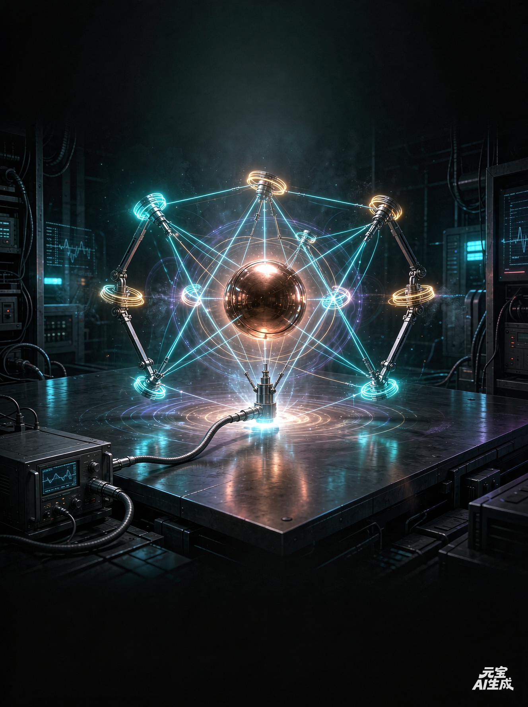
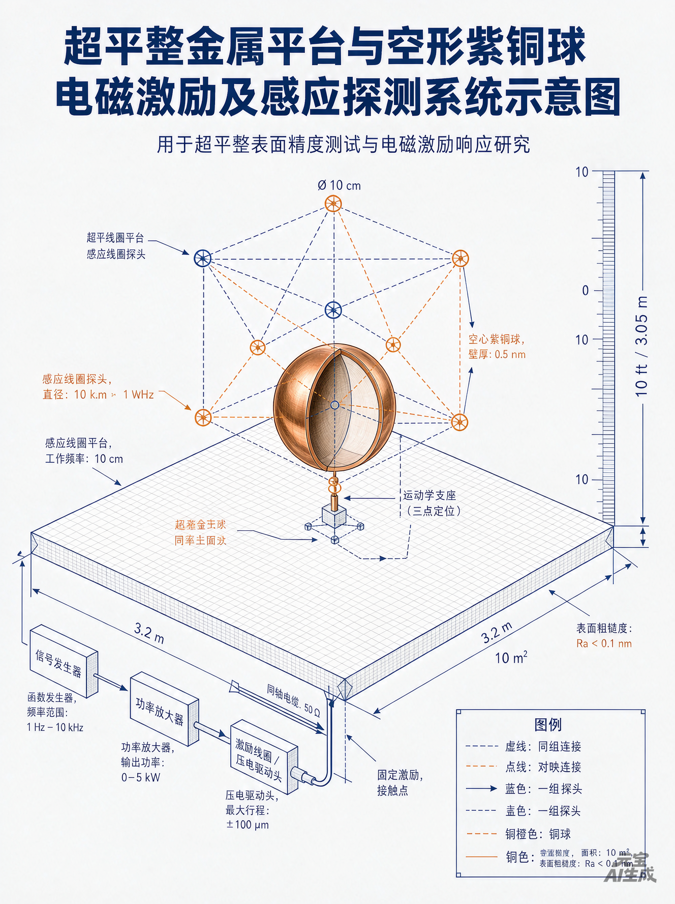
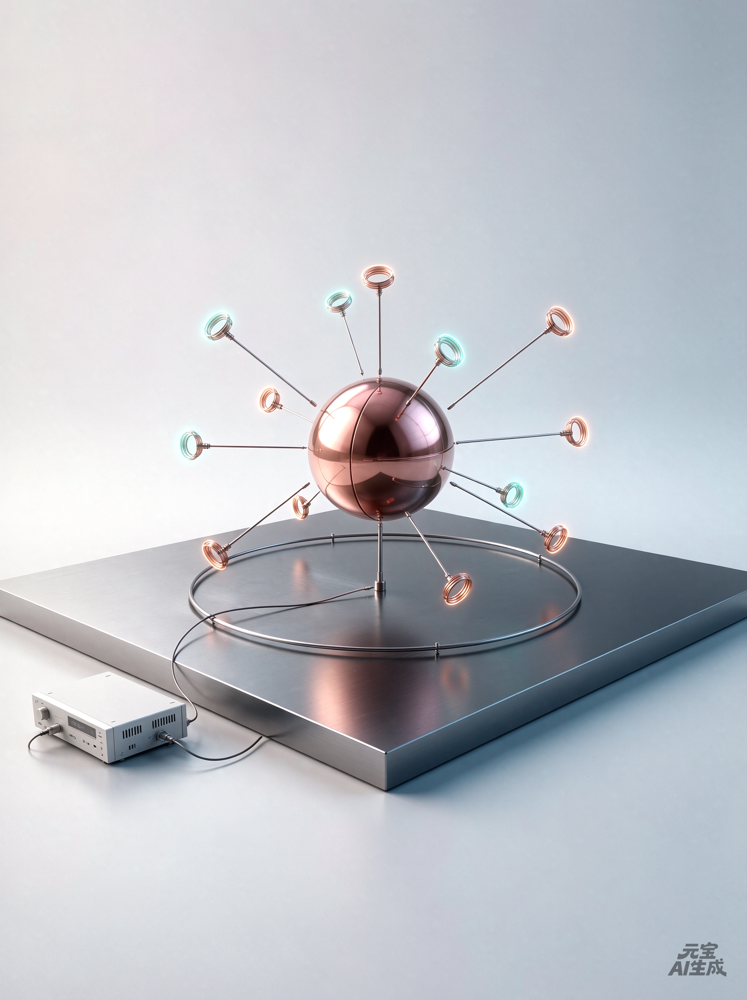
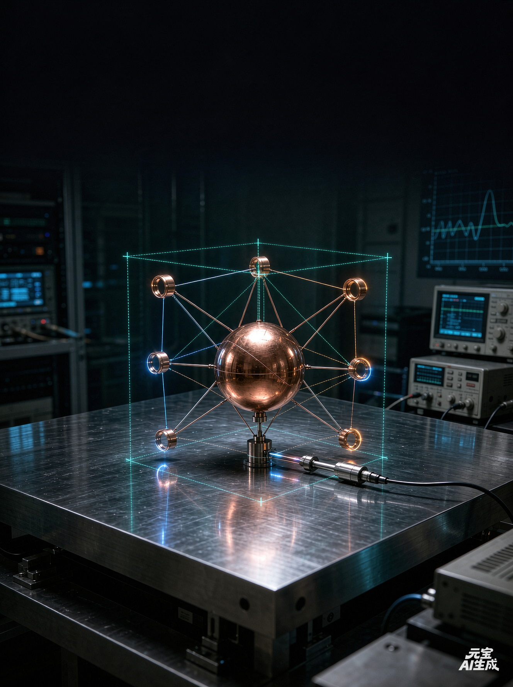
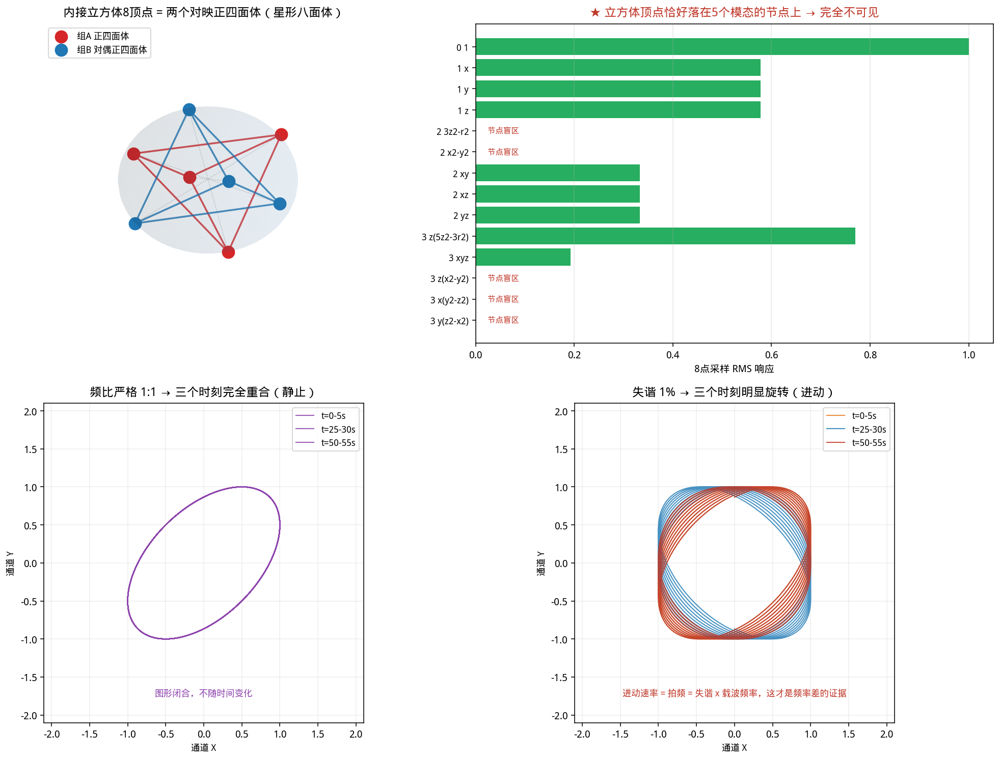
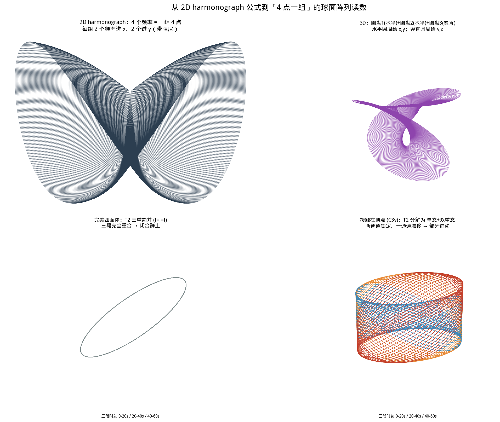
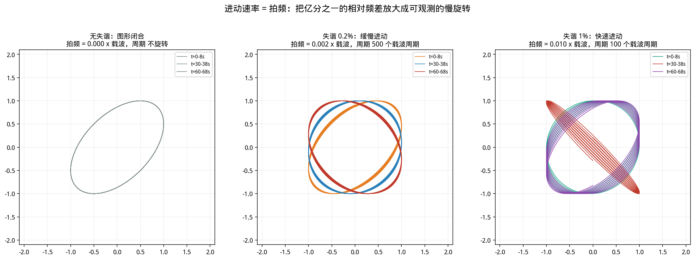
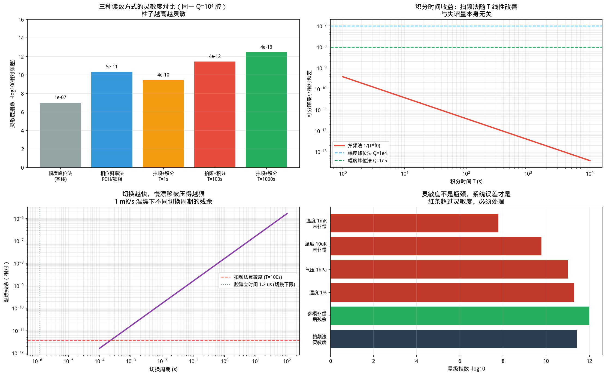
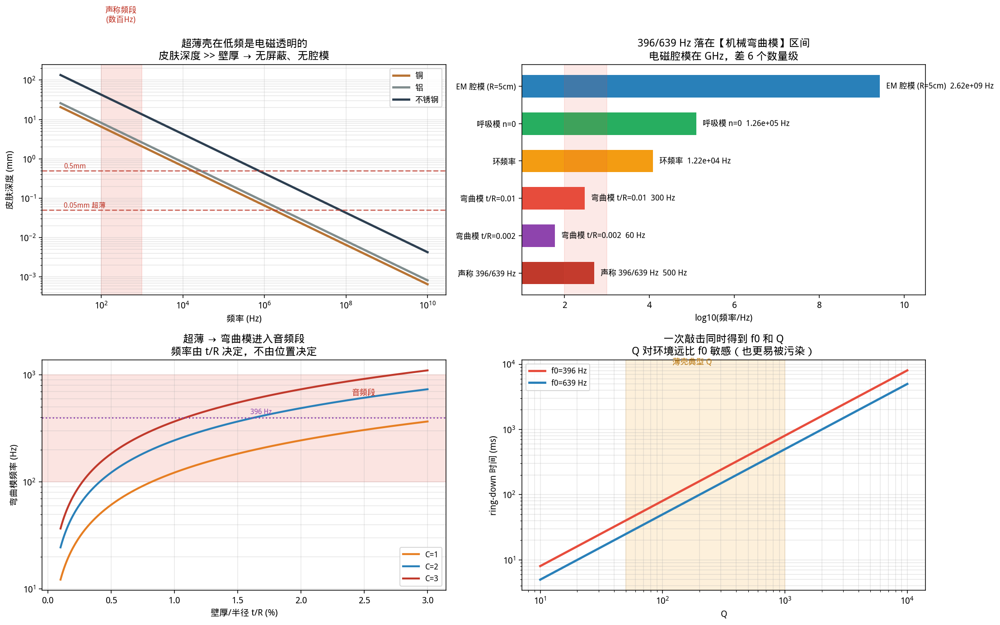
路径：工具与模板\、项目根目录
一个主题涉及通灵传讯的工程项目，最容易被误读成两种极端：狂热背书，或全盘嘲讽。本页选择第三条路——把它当作一个待检验的工程命题处理。
① 三层分离：可检验的物理陈述 / 机制解释 / 宇宙论叙事——混层即出错（25.4 mm 之误就是这么来的）。
② 原话与设计分开标注：R1–R15 是巴夏说的；Ø80×0.4、八点阵列、对数扫描都是我们的补法。本页全程用颜色区分。
③ 先定量，后定性：任何「异常」在给出量级、置信区间、混淆源排除之前，不得称为发现。
网络上常有把「特斯拉 + 地球共振 7.83 Hz + 标量波 + 空间频谱地图」拼成瞬移方案的说法。该项目第 19 轮对话已做过专项核查，结论是：特斯拉的公开文献与专利里没有「地表瞬移频谱地图」这东西；他留下的是「地球作为导体／谐振腔的低频驻波」思路。Schumann 共振（7.83 / 14.3 / 20.8 / 27.3 / 33.8 Hz）是可测的真实物理，但那是「地球—电离层腔体」的共振，与移动物体无关。
详细核查过程见 轮 19 文档。
巴夏说这个实验「至今无人做过」。而本次检索确认：到 2026 年 9 月 21 日为止，公开网络上依然找不到任何一处做过它的记录。
所以现在摆在这里的不是一个「已被证伪的玄学」，也不是一个「即将实现的科技」，而是一个真的空着的桌面。它值得被做，不因为它可能印证谁，而因为它第一次把一个无限定的主张，逼成一条可以被测量、也可以被否定的边界。
前面十章只做一件事——把一个无限定的主张，压缩成一条可测、可否定的边界。这一章反过来做：把边界重新打开，往前推演到它可能的尽头。推演的起点，必须是本页那台还没搭起来的装置。
本章属于「第四层」——远景叙述层。§10 定的三层分离纪律在此照旧生效。本章全部内容不进入 §7 四道判据中的任何一道，也不构成任何验收标准；其中涉及来源的部分，均为原始叙述者未经主流科学界验证的自述，本页只做结构整理，不做真伪判定。
一句话：本页的实验能否成立，与本章一个标点都无关。本章唯一的用途，是回答一个动机问题——假如物体真的带有「本有的空间地点频率」，那么这个频率被读出来之后，人类可能走向哪里。
远景不能凭空起跳，它必须踩在本页的实验上。所以先把这台装置在做什么，用一句工程语言说清：
一张 ≥10 ft 的超平桌子，一只空心导电球在其上静息（§3、§7.1）。外部声／电激励把球壳激发成一个灵敏的谐振体；若「位置」真是一个可读属性，那么同一物体在不同位置，应给出可重复、可区分的频率读数——这就是所谓「本有的空间地点频率」。
三个限定必须同时记住：① 单向（只读，不写）；② 单点（一次一个位置、一个物体）；③ 静态（测稳恒读数，不测传递过程）。这三点决定了本章的五级台阶，第一级就是它，也仅仅是它。
关键在那条被反复强调的判据上：δ 必须只随位置变化，不随材料变化。材料无关，是「位置是空间属性」这句话唯一的可测指纹；而它同时是 §8 误差预算里最容易被温度、气流、声辐射力冒充的那一条。所以它只能被当作待检验的判据，不能被当作支持结论的证据。
把本章的推演拆成五级。每一级都以上一级的产出为输入，跳级即失去可解释性——这条纪律与 §7 完全一致，只是终点被推远了。
本章的远景术语取自一份公开的中文自述：张祥前《果克星球奇遇》（1985 年夏，时年 19 岁，安徽庐江；他自述被带到一颗名为「果克星」的星球生活一月，返回后长期撰文宣传其所得，并公开过一个「统一场论」与「人工场扫描」的技术图景）。
§10 已经示范过做法：不判定真伪，只取其中可被工程化的那部分描述。张祥前的这份自述至今未获主流科学界验证，其「统一场论」也未被同行评议接受。本页因此只做两件事：把它当作一个远景术语的来源予以标注；以及，在 §11.7 指出它与巴夏主张之间一个值得注意的重合点。
参照来源：张祥前官网的实验指引（unifiedfield.info，含其自称的可复现演示与「邀请独立复现或反驳」的声明）。本页不为其内容背书。
他笔下与本章台阶结构直接对应的，是两大网络——它们正是「全球人工运动场扫描技术」的实际运转形态：
结构上的注意点：这两个网络恰好对应本章台阶的两条支线——运动网 = 台阶 02→04（位置读写），信息网 = 台阶 05 的一个特例（把「态」具体化为「意识态」）。也就是说，原叙述的技术骨架，与本页推演出的台阶是能对齐的。这不代表它正确，只代表这套远景描述并非随意拼凑，而是有一个可被拆解的内部结构。
下面按「它宣称能做到什么」逐项展开，共七类。每项后的方括号是它在 §11.2 五级台阶中对应的位置，仅作结构对齐，不代表任何一项已被实现。所有条目均出自前述自述，本页不为其真实性作任何担保。
这一节是本章唯一有实际用处的部分。远景再大，也必须回答一个问题：它最原始的那一步，落在本页的哪条判据上？下表把 §11.4 的功能逐条折回。任何一项在前身栏里写不出东西的，就是本页管不到的——只能如实标注为「无」。
| 远景功能 | 它要求的最小可测现象 | 本页哪一条是它的前身 | 现状 |
|---|---|---|---|
| 全球遥视／锁光成像 | 一个物体能被远处非接触地读出状态 | §7 判据 ① 规格达标（先把「读」的能力建起来） | 未开始 |
| 全球瞬移 | 路程时间与距离无关（详见 §11.6） | §7 判据 ③ 主动响应：关掉信号位移即消失 | 未开始 |
| 穿墙／零质量态 | 物体在极端态下与容器无动量交换 | §8「接触点／Q 泄漏」项——那正是动量交换的记账处 | 未开始 |
| 无导线场能供电 | 非接触能量转移可被计量并归属 | §8「工频干扰」与「电磁泄漏」两项（先学会把它测干净） | 未开始 |
| 无创体内手术 | 毫米级非接触力／位移可控 | §7 判据 ①：平面度与滚动阻力本质都是位移计量 | 未开始 |
| 冷焊／物质转化 | 两固体在无热输入下自发互嵌 | §8「温度（机械模）」项——需先排除热致变形 | 未开始 |
| 意识读写 | 非接触读出并回写神经活动 | 无——本页不涉及，且此项属第三、四层叙事 | 本页范围外 |
注意最后一行的写法：写不出前身，就写「无」。这不是谦虚，是纪律——一个功能如果在最小尺度上没有对应的可测现象，那么它在工程上就还不存在，无论叙述得多完整。
远景里最诱人的是瞬移。而瞬移恰好可以用一句不需要知道机制的话来检验——这也是本页能真正贡献给远景的、唯一一条硬判据：
因为它把「瞬移」从一个状态词变成了一个函数性质。状态词无法证伪（对方永远可以说「条件没满足」），函数性质可以——只要斜率不为零，瞬移就没发生；只要斜率为零，就发生了某种现有物理无法解释的事。这正是 §7 判据 ③「关掉信号位移即消失」在同一条思路上的延长线。
整理本章材料时发现一件有意思的事：两个来源毫无关系，却给出了同一个可检验特征。
| 可检验特征 | 巴夏（2017 传讯） | 张祥前（1985 自述／官网实验指引） | 同源？ |
|---|---|---|---|
| 材料无关响应 | 「位置签名」不依赖被测物材质，只随位置变 | 其官网实验指引称：交替电磁装置可在局部产生涡旋区，有机组织、金属、植物、纸张、陶瓷、绝缘板均出现响应 | 否 |
| 以电磁手段搅动 | 声／电激励空心导电球 | 用交替电磁装置制造局部区域 | 否 |
| 位置可被改写 | 瞬移＝位置的重新赋值 | 全球运动网＝按坐标瞬移物体 | 否 |
两个未经证实的来源互相重合，仍然只是两个未经证实的来源。它不构成任何证据，也不改变 §10 的边界声明。它的价值只有一个方向：
它把「该测什么」从一个模糊的口号（「测位置频率」）变成一个具体参数——材料无关性。而这一条恰好是 §8 误差预算里最容易被温度、气流、声辐射力冒充的那一项。所以正确的用法是：把它设计成判据，而不是把它当成证据。一旦反向使用（「两个来源都对上了，所以是真的」），本页的全部纪律当场作废。
§11.4 列了七类、三十余项功能，读起来像一份科幻工程目录。但其中没有任何一项进入本页的判据。本页的判据仍然只有 §7 那四道：规格达标、基线可复现、主动响应、外部复现。
所以这张远景图的作用只有一个，而且很小：回答「为什么值得把那只 Ø80 mm 的铜球真的做出来」。因为它左边连着四道能落地的判据，右边连着一条斜率必须为零的直线——而这两端之间，目前仍然是空的。
远景不缩短距离，只告诉你距离通向哪里。该做的第一件事，仍然是那张桌子、那只球、那 30 分钟基线。
前面十一章回答「怎么做、怎么验」。这一章换一个提问者：如果它是真的，谁会因此重算资产负债表？——给决策者的一份只讲量级的账本。所有数字都标出处，所有推断都标前提。
本章与 §11 同属「第四层」——远景／战略叙述层，不进入 §7 四道判据中的任何一道，也不构成验收标准、投资建议或政策建议。
本章全部推演，建立在一个尚未验证的假设上：物体在不同空间位置会给出可重复、可区分的频率读数（§4.4：这类实验至今无人做过）。只要这条被否定，本章所有数字同时归零——而本页的实验资产（方法论、工艺、判据）一条都不会损失。
市场数字取自 2025–2026 年的公开研报，只用于量级参照；不同机构口径相差可达 30% 以上，不作精确引用。
先把立场写清楚：这项技术的源头，是 Bashar 的通灵信息。它不属于某个实验室、某家公司或某个国家——它是递交给整个人类的一份公共知识。
因此本项目始终把「位置频率」当作一项应当向所有人开放的公共量：像米、秒、开尔文那样，由全人类共同定义、共同使用，而不该被谁抢先注册成私产去收租。它是一个公益项目——参与的人越多，验证越快、误差越小、落地越早。
它真正要兑现的不是市场份额，而是那句话：当「距离」从成本表里消失，地球村才第一次真正成为现实。本章接下来算的这笔账，量的是这件事有多大，而不是它能被谁占有。
凡是「把东西从这里弄到那里」的行业，成本都能拆成两项——这一条对快递、外卖、航空、手术耗材，甚至对给病人插一根胃管，都同样成立：
它意味着瞬移不是「更快的快递」——那只是把 b 变小；它是把 b·d 这一整项删掉。于是行业不会是被「改良」，而是被重新定价：谁的账本里含 b·d，谁的成本就要重算。
您点出的每一项——同频冷焊、食物直达、无创手术、瞬移物流、城市级瞬移——都不是各自独立的幻想，而是同一台装置从「单向读数」升级到「双向写入」之后，沿同一个方向排开的一列台阶。摊平成一张表就是这样：
| 级 | 场景 | 一句话读法 | 被它替换掉的东西 | 依赖哪一级台阶 |
|---|---|---|---|---|
| S0 | 同频冷焊 | 给两件物体施加同一个空间地点频率，等于把它们放进「同一个地方」——原子之间不再有势垒，直接成键。这就是您说的「两种东西融在一起」。 | 焊接 / 钎焊 / 胶粘 / 铆接 / 螺栓；异种材料连接的全部工艺路线 | 写（第 2 级）＋ 定位精度 |
| S1 | 食物直达 | 把「投送」和「摄入」合成一步：食物直接出现在胃里，或营养精微直接进入肠道与血管。 | 进食本身；管饲与饲管；肠内营养泵与配方粉；部分静脉营养 | 写 ＋ 活体内定位 |
| S2 | 无创手术 | 把「进入」和「切除」合成一步：病灶被移出体外，器械与药物被移入体内，体表不留创面。 | 开刀与腔镜手术、麻醉、住院床位、术后护理与并发症处理 | 写 ＋ 活体安全 |
| S3 | 瞬移物流 | 把「运输」和「仓储」合成一步：货不再需要在路上，也不再需要在库里——仓库这个设施本身失去存在理由。 | 干线运输、仓储、库存占用、包装、货损与货运保险 | 网格（第 3 级） |
| S4 | 城市级瞬移 | 把「通勤」和「出行」合成一步：从 A 到 B 不再经过路。 | 城市公交、轨道交通、网约车、私家车通勤、机场与安检 | 场网（第 4 级）＋ 生命体安全 |
| S5 | 行星／星际级 | 把「发射」和「在轨机动」合成一步：入轨不再是工程难题。 | 运载火箭、上面级、部分在轨推进与再入 | 态读写（第 5 级） |
现役工程的「冷焊」是真的，但条件很窄：同种或高度相容的金属 ＋ 洁净表面（去除氧化膜）＋ 高真空 ＋ 足够接触压力。NASA 伽利略号木星探测器的主天线，就是因为冷焊粘死而未能完全展开，代价是传讯速率从 134 kbit/s 掉到约 1 kbit/s。
上表 S0 写的是它的推演式延伸：若「同一个位置频率」能够替代「同一种材料 ＋ 洁净 ＋ 高压」，那么限制条件里的前几项可以同时撤销，冷焊就从「航天设计事故」变成「任意两件物体之间的连接工具」。这是推演，不是已验证事实。
下表把 S0–S5 各自对应的产业，换算到可比较的刻度上。左列是今天存在的会计科目，不是想象出来的市场。
| 被替换的科目 | 2025 年规模（公开研报口径） | 瞬移的替代逻辑 | 近期可替代份额（保守） |
|---|---|---|---|
| 焊接与连接 （设备＋焊材） |
全球 ≈ US$271–311 亿 （约 ¥1,900–2,200 亿） |
同频冷焊：原子级一次成键，无热影响区、无填充材料、可跨材料种类连接 | 高 —— 精密件、异种材料、微连接最先被拿走 |
| 肠内营养 / 管饲 | 全球 ≈ US$87–133 亿 | 营养直接送到胃或肠道血管，撤掉饲管、泵与配方粉 | 中高 —— 医院与居家管饲几乎全可替代 |
| 外科手术与介入 | 手术机器人全球 ≈ US$92 亿；外科整体在千亿美元量级 | 无创：把病灶移出、把器件与药物移入，无需切口 | 中 —— 先吃活检、取栓、取石、定点给药 |
| 中国社会物流总费用 | ¥19.5 万亿（2025，＝ GDP 的 13.9%） 其中运输 ¥10.6 万亿、保管 ¥6.5 万亿 |
删掉运输费用里的距离项，与保管费用里的库存项 | 低 → 高 —— 先高值小体积（芯片、药品、贵金属、生物制品） |
| 全球航空客运 | ≈ US$9,790 亿–1.007 万亿（IATA，2025） | 中短程航线被城际瞬移吃掉客座 | 中长期 —— 1,500 km 以内先失守 |
| 铁路客运 ＋ 城市公共交通 |
铁路客运 ≈ US$2,607–3,167 亿； 城市公交／出租／网约车 ≈ US$2,123–2,771 亿 |
通勤与市内机动不再需要车辆与路网 | 远期 |
| 全球新车市场 （含后市场） |
新车 ≈ US$2.5 万亿；全生命周期 ≈ US$4–4.5 万亿 | 通勤需求消失，私家车从「必需品」退回「爱好品」 | 远期 —— 不是被替代，是需求基数萎缩 |
| 交通设备制造 | ≈ US$4.2 万亿（2025） | 同上，整条产业链的订单基数被改写 | 远期 |
① 不能简单相加。上表科目互有重叠（新车属于交通设备、城市交通属于客运服务），直接求和会重复计算。只取互不重叠的四类——物流 ＋ 客运 ＋ 城市机动 ＋ 交通设备——量级也在 US$8–10 万亿／年，约合全球 GDP 的 8%–10%。
② 这是 TAM，不是收入。它衡量的是「可能被重新定价的存量总盘」，既不是本项目的营收，也不是投资回报。
③ 它一定带反面。任何一项被替换，都意味着对应行业的既有资产要减记——船队、机场、仓储园区、焊工的职业证书。决策者要同时看到「价值创造」和「资产减记」这两栏，它们是同一次重定价的一体两面。
一个常见误判是：等效应被验证了，再成立一家「瞬移物流公司」。这个顺序是反的。回顾两项基础技术真实的商业化路径：
GPS 的第一桶金不是导航 App，而是原子钟与测地基准；激光的第一桶金不是光通信，而是测距与准直。任何「改动坐标」的技术，最先卖出去的永远是测量它的能力。
① 计量服务——卖「证据」：可复现的第三方测量与数据服务；② 场写入设备——卖「第一台能改位置频率的机器」；③ 网络运营——卖「接入」。
顺序不可颠倒，跳级即失去定价权。
六个场景里，真正今天就有付费方的，是看起来最小的一项——S0 同频冷焊。理由很实在：它不需要「运人」，不需要过活体安全审批，也不需要一张覆盖城市的网；它只需要两件东西被放到同一个位置频率上。
而在现役工业里，异种材料连接（铝—铜、钛—钢、金属—陶瓷）长期是最贵、最不可靠、专利最密集的一环。这是一个效应一旦成立就立刻有客户的入口。
这一条最容易被忽略：引力红移的比对能力，中国已有世界级装置——光钟、超稳激光、隔振平台、时频比对链路（即 §4.1 里 NIST／JILA 那一套的国内对应能力）。
换句话说：这不需要新增大科学装置，只需要在存量装置上换一个问题。成本曲线与新建一台完全不同。
「位置频率」如果成为一项可计量的量纲，它应当像米、秒、开尔文一样，由全人类共同定义、共同使用，而不该被谁抢先注册成私产去收租。
这不是一句姿态，而是它的来源决定的：这项技术源自 Bashar 的通灵信息——它从来不是某个实验室、某家公司或某个国家的发明，而是递交给整个人类的一份公共知识。所以它天然是一个公益项目：参与的人越多，验证越快、误差越小、落地越早。
它要兑现的也不是市场份额，而是那句话——当「距离」从成本表里消失，地球村才第一次真正成为现实。
深海、太空、灾区、人体内部——这些地方今天的问题都是「送不进去」。一旦「运输问题」变成「频率问题」，应急、国防、航天、医疗这四类作业书同时被改写。这是任何单一产业技术都给不出的杠杆。
本页 §7 的第一道判据是「规格达标」——把两只 Ø80×0.4 的球做出来，把基线稳上三十分钟。这一道都还没过。本章所有数字的性质是「如果」，不是「将要」。
Allais 视差摆的效应被报告了 70 年仍未收敛，根因是没有盲测、没有预注册、没有误差预算表（§4.6）；Betz 那颗「会自己滚的金属球」，最终被解释成一颗球阀。两次教训的共同点是：先有结论，再去找测量。
本章的账目之所以敢写，恰恰是因为它被放在 §7 的四道判据之外——它不被允许进入任何验收标准。
这是本页最值得强调的一条：即使效应最终被否定，本项目产出的工艺规范、误差预算、变量矩阵、四道判据，对任何后续精密测量实验都直接可用。
远景是期权，不是赌注——最大的下行损失，是一张桌子和一只球。
本章不画饼。它做的是给「一张桌子、一只球、三十分钟基线」这件事，配上一个量级足够大的理由。
如果那只球真的会在不同位置给出不同频率——那么被改写的东西，比这只球本身大得多：焊接、营养、手术、物流、通勤、航天，所有账本里含 b·d 的成本结构都要重算一遍。
但如果它不会呢？那也只是一张桌子、一只球、三十分钟。
前面十二章都在回答「那只铜球会不会在不同位置给出不同频率」。这一章问一个更狠的问题：凭什么一定是球？把「尺寸、材质、几何形状、是否导电」四个变量逐个放开，命题的边界才会露出来——而方程必须跟着改。本章与 §4.7 变量矩阵互补：那里已有 M1 材质 / M2 非导电球 / T1 壁厚 / Z 高度四轴，这里补的是几何形状、尺寸标度、导电性扩展三条新轴。
与 §11 同级：本章的用途是规划下一步测什么、怎么测、看到什么算什么。所有标度律都是可检验的预言。任何一条与实测冲突，以实测为准。
本页 7.4 给的是球的专用式。要让它对任何几何体都成立，只需要一步：把「半径」换成两个量——一个等效特征长度，一个无量纲形状因子。
四个因子各管一件事，一次实验只准动一个：
注意：「位置」不在 L_eff 里，也不在 c_s 里——它只能待在微扰项。这句看着是废话，但它决定了整个升级实验怎么设计：要看清微扰项，就必须把另外三个因子按住不动。
这是最容易毁掉整组对比的一个坑：空心薄壳的本征谱是「弯曲模」，实心块的本征谱是「体波共振」。两者差的不只是数值高低，而是对整个表面／界面的敏感度——弯曲模对边界条件、接触点、气流极敏感（这正是信号所在），体波模几乎不敏感。
所以：拿一只空心铜球去比一块实心铜正方体，测到的差异里绝大部分来自「模态类型」，而不是「形状」。
| 形态 | 归一化式 | Ø80 铜的量级 | 对表面／边界 | 适不适合做位置实验 |
|---|---|---|---|---|
| 薄壳型 （空心，t/R ≤ 0.05） | f_n = (c_s/2πR)·η·Φ_n η = t / ( R·√(12(1−ν²)) ) | 60–230 Hz | 极敏感 | ✅ 首选 |
| 体波型 （实心／厚壳） | f_n = (c_s/2L)·λ_n | kHz–MHz 级 | 不敏感 | ✗ 只作对照 |
做法 A（推荐）：空心铜正方体壳，壁厚与等效尺寸都对齐铜球——「模态类型」不变，只动了形状，差异可以直接归给几何。
做法 B：实心铜正方体——频率跳 2–5 个数量级，进入体波区。它回答的是另一个问题：「位置效应是否普遍地作用于任何振子」，而不是「形状有没有影响」。两者都值得做，但结论不许混着说。
另外提醒：正方体薄壳是激光焊 12 条棱，比球的赤道环缝难得多，而且棱线本身是刚度奇点，会额外带来一组劈裂谱线——它既是我们要测的几何效应，也是新的伪影源。
方程里的 L_eff 对球是 2πR，对正方体是什么？没有唯一答案——而这正是可以利用的地方。取三种不同的等效半径各做一遍分析，哪一种能把数据收拢成一条曲线，就说明效应走的是哪条长度尺度。
| 等效半径 | 定义 | 若数据按它坍缩，说明效应的长度尺度是 | 怎么得到 |
|---|---|---|---|
| R_V 等体积 | (3V/4π)^(1/3) | 与体积／质量同尺度（惯性、引力类） | 称重 ＋ 排水法测 V |
| R_S 等表面积 | (S/4π)^(1/2) | 与表面／界面同尺度（声辐射、表面耦合） | 3D 扫描或解析式（规则体） |
| R_e 等电容 （静电半径） | C/(4πε₀) | 与电磁近场耦合同尺度（涡流、镜像电流、极化） | LCR 表 1 kHz 实测，不必硬算 |
| 形状 | V | S | R_V | R_S | R_S / R_V | R_e | 点群 |
|---|---|---|---|---|---|---|---|
| 球（径 d） | πd³/6 | πd² | 0.500 d | 0.500 d | 1.000 | 0.500 d（严格） | O(3) 连续 |
| 正方体（棱 a） | a³ | 6a² | 0.620 a | 0.691 a | 1.114 | ≈0.655 a | O_h |
| 正四面体（棱 a） | 0.1179 a³ | 1.732 a² | 0.304 a | 0.371 a | 1.220 | 实测 | T_d |
| 不规则体 | 排水法 | 3D 扫描 | 算 | 算 | — | LCR 实测 | 仅恒等 |
球 1.000 正方体 1.114 正四面体 1.220。几何越「尖」，两个半径分得越开。如果效应只认其中一种尺度，三个形状的排序会立刻显出来——这就是为什么形状组必须选这三个规则体：它们把 R_V/R_S 均匀地分成了三档。
R_e 一栏：球为 d/2（严格）；正方体 ≈0.655a 为文献常用值，本实验一律以 LCR 实测为准，不用算的；正四面体与不规则体一律实测。
球是唯一「所有方向都等价」的形体，所以它的模态带着 (2l+1) 重简并。换成正方体、正四面体，对称性降低，原本重合的谱线会劈开——而劈裂方式由点群唯一决定，不是随机噪声。
| 形状 | 对称群 | 球谐 l=1（原本 3 重） | 球谐 l=2（原本 5 重） | 对本项目的后果 |
|---|---|---|---|---|
| 球 | O(3) | 不劈裂（3 重） | 不劈裂（5 重） | 谱最简；轮 04 的 A₁ ⊕ T₂ 分解正是 l=0 ⊕ l=1 的体现 |
| 正方体 | O_h（48 阶） | → T₁u | → E_g(2) + T₂g(3) | 5 重劈成 2+3，谱线多一组；有反演中心 → 出现 g/u 之分 |
| 正四面体 | T_d（24 阶） | → T₂ | → E(2) + T₂(3) | 劈裂数与正方体相同，但无反演中心 → 没有 g/u，模态归属规则不同 |
| 不规则体 | 仅恒等 | 全解除 | 全解除 | 谱最密；模态归属只能靠 8 点阵列的振幅热力图 ＋ FEM |
7.5 的 M[i][n] 是「第 i 个传感点在第 n 阶模下的归一化幅度」——它依赖物体在各传感点处的振型。形状一变，M 全部作废，连盲点位置都会移位。
所以每引入一个新几何体，必须重做三件事：① FEM（或单模激励扫描）重标 M 矩阵；② 重做盲点检查；③ 重做秩检查。跳过任何一步，比出来的「形状差异」都可能只是「我恰好站在了节点线上」。
还有一条容易漏的：同一形状还要记录它相对 8 点阵列的朝向。正方体至少做三种朝向（面心、棱心、体对角线分别对齐阵列主轴），否则「朝向」会混进「形状」。
| 编号 | 改什么 | 按住不动的 | 方程里只动哪一项 | 可检验的预言 |
|---|---|---|---|---|
| E1 尺寸标度 | Ø40 / Ø80 / Ø160（同 t/R） | 材质、形状、薄度、位置 | L_eff（1/R） | f ∝ 1/R；三点连成斜率 −1 的直线 |
| E2 材质 | 铜 → 铝 → 不锈钢 → 黄铜（同尺寸同形状） | 尺寸、形状、位置 | c_s | f ∝ c_s；ε_loc 应与材质无关 |
| E3 几何形状 | 球 → 正方体 → 正四面体 → 不规则（同材质、等 R_V、同壁厚） | 材质、等效尺寸、壁厚、位置 | Σ_n（形状因子） | 按某一种等效半径归一后，ε_loc 坍缩到一条线 |
| E4 导电性 | 铜 → 绝缘薄壳；同一只球涂导电层 / 不涂；再扩展到「穿导电服的动物 vs 穿棉衣的动物」 | 尺寸、几何、质量（配平） | 是否出现电磁项 δf_EM | 若绝缘体清零 → 机制含导电路径；若同量级 → 排除涡流／镜像电流 |
要点：必须保持 t/R 不变（Ø40 配 0.2 mm、Ø160 配 0.8 mm），否则尺寸与薄度两个变量会混在一起。0.2 mm 与 0.8 mm 的加工难度差得极远——这一组的真实瓶颈是工艺，不是物理。
f = f_n + δf_loc三个点是最低要求；四点以上才能谈「幂律成立」，而不是「三点连成一条线」。
材料在方程里只通过一个数进入——c_s = √(E/(ρ(1−ν²)))。所以这一组的预言是可以直接算出来的：同尺寸薄壳球的弯曲模频率，应当正比于 c_s。
| 材质 | E（GPa） | ρ（kg/m³） | ν | c_s = √(E/(ρ(1−ν²))) | 相对铜 | 能否做薄壳 |
|---|---|---|---|---|---|---|
| 铜 Cu（基准） | 117 | 8960 | 0.34 | 3843 m/s | 1.00 | ✅ |
| 黄铜 H62 | 110 | 8500 | 0.34 | ≈3825 m/s | 1.00 | ✅ |
| 铝 Al | 69 | 2700 | 0.33 | ≈5355 m/s | 1.39 | ✅ |
| 不锈钢 304 | 193 | 7900 | 0.29 | ≈5165 m/s | 1.34 | ✅ |
| 钠钙玻璃 | 70 | 2500 | 0.22 | ≈5424 m/s | 1.41 | ✗ 脆，只能厚壁／实心 |
| 实木（顺纹） | ≈11 | ≈700 | — | ≈3960 m/s （仅顺纹） | ≈1.03 | ✗ 吸湿＋各向异性 |
绝对频率一定会变——那是 c_s 在起作用，属已知物理，不是发现。真正要问的是：相对频移 ε_loc = Δf/f 会不会随材质改变？
若 ε_loc 与材质无关 → 位置项不经过任何材料参数，它在方程里只能待在最外层（乘性因子或加性项）——这是一个很强的结构性结论。
若 ε_loc 随材质单调变化 → 位置项与 E、ρ、ν 中至少一个耦合 → 机制方向立刻被限定。
⚠️ 铝（1.39）与不锈钢（1.34）的 c_s 几乎相同，但一个是轻金属、一个是重金属——这一对是天然的「同 c_s、异 ρ」对照，能额外分离出「密度／质量」这条通道。建议把这一对单独列出来分析。
a = 0.806 d（V 相等）。质量自然配平，差异可直接归给形状。a = d/√3 = 0.577 d。但这样正方体体积只有球的 36.8%，质量差 2.7 倍 → 必须额外做质量对照，否则质量效应会冒充形状效应。做法：两套都做。等 R_V 那套用来问形状；等外接那套用来验证「质量是不是独立通道」。
残差最小的那条即效应的长度尺度：
做一只树脂或陶瓷空心球（尺寸、壁厚、质量全部按铜球配平），然后一半实验贴满导电铜箔、一半不贴，做 A-B-A。
几何、质量、材质、支撑点全部不变，唯一变的是表面导电性——这比「换一只球」干净一个量级，因为它把所有个体差异一次性消掉了。这和 7.4 的双球交换法是同一个思路：让想改的变量成为唯一变了的那个。
注意：贴铜箔会同时改变质量分布与表面阻尼，所以还要做一个「贴等质量绝缘膜」的平行对照，把「贴东西」这个动作本身的影响扣掉。
最干净的导电性对照。与铜球同模态类型（都是薄壳弯曲模），尺寸与质量配平。若它给出零、铜球给出非零 → 机制含导电路径。
这就是 §4.7 表里 M2 的升级版：从「换一只球」升级为「同一只球双向切换」。
只作定性对照，不能当定量基准。木材是正交各向异性：顺纹与横纹的 c_s 差 10 倍以上 → c_s 必须写成张量 c_s(θ)，θ 是木纹与阵列主轴夹角。
更麻烦的是吸湿膨胀：湿度一变频率就漂，量级比 §8 表里的 1 mK 温漂更大。必须先密封覆膜并恒湿。
⚠️ 旋转木块（不换位置）就会改变频率——所以「旋转」本身必须作为一个对照写进协议，否则正交各向异性会直接冒充成位置效应。
见下方专项。这一族最后做，且必须先用假体把衣物与质量效应清干净。
① 生理通道会冒充信号。心率（1–4 Hz 基频＋谐波）、呼吸（0.2–0.5 Hz）、肌颤（8–12 Hz）必然出现在谱里，而且它们对位置的依赖可以严格为零——正因如此，它们是最好的内部对照。必须与 8 路同步记录，并套用 7.5 的接入流程第三行：若这些通道也出现同向进动，命中即被解释为生理／环境伪影。
② 几何不是常数。呼吸与姿势让体表形状连续变化 → R_eff 在漂移。必须：姿势固定（约束或麻醉）＋ 姿态监测 ＋ 同步胸围／体表位移 ＋ 称重（质量是守恒量的代理）。
③ 体温是热源。37 ℃ 体表在 20 ℃ 环境里会产生稳定上升气流，而这股气流的扰动正好落在薄壳弯曲模最敏感的频段——这一项的抑制难度高于 §8 表里任何一行。
④ 伦理与剂量必须先过关。活体 ＋ 声／电磁激励需要伦理审查与安全剂量上限；原话里的 isolated chamber 对活体意味着额外的氧、温、应激约束，不能照搬。
⑤ 所以顺序是：先假体，后活体。用「等质量水袋 ＋ 同一件衣服」把「导电服 vs 棉衣」这层先做完——它把衣物效应、质量效应、几何效应全部分离干净，活体实验就只剩「生理」这一项不确定性。
补充一句物理上的细节：「绝缘」≠「不参与电磁」。木头与棉衣仍然有介电常数 ε_r，位移电流照样存在。所以绝缘体清零（若有）排除的是导电路径（涡流／镜像电流），而不是整个电磁机制。
这是本章最实用的一条：球会滚，正方体不会滚。同一套「净位移 > 2 mm ＋ 速度衰减」的判据，放到面接触物体上会直接失效——静摩擦把起步门槛抬了一到两个数量级，而一旦起步，它的运动是翻面或滑移，不是连续平移。
| 几何 | 接触方式 | 预期运动模式 | 判据该怎么写 |
|---|---|---|---|
| 球 | 点接触（理论）／Ø6 mm 微平面 | 连续滚动 | 净位移 > 2 mm ＋ 30 s 内速度 < 0.05 mm/s ＋ 60 s 不返回（沿用 §6 的 H3 窗口） |
| 正方体／正四面体 | 面接触（大面积 → 静摩擦锁定） | 翻面或整体滑移 | 位移量化成面宽／棱长的分数或整数倍；先单独测「起动力阈值」；主判据改为「面序改变」＋ 重心位移（由 8 点阵列的 A₁ 通道反推） |
| 不规则体 | 多点离散接触 | 摇摆／绕偏心轴转动 | 用姿态变化（IMU／双目）＋ 质心位移；「停在原位但转过一个角」也构成事件，必须单独定义 |
§6 的 H3 停止窗口里「目标区 = 5 倍球径」是以球的滚动尺度定义的。换成面接触物体后，必须改用以「该物体最短特征尺寸」为基准的相对门槛，而且每个几何体各写一份，不能共用一个数。
还有一条球上没有的混淆源：面接触的接触刚度是随机分布的。同一个正方体换个朝向放，接触状态就变，频率也跟着变。这就是为什么正方体必须做三种朝向——朝向既是变量，也是噪声源。
这一组实验的价值在于：每一种结果都直接改写方程的形式。事先把对照表写死，才能避免事后解释（这正是 §4.6b 里 Allais 缺的那件事）。
| 观察到的结果 | 方程该怎么改 | 对命题的含义 |
|---|---|---|
| 各形状在某一等效半径归一后 ε_loc 坍缩到同一条线 | ε_loc = A·(R*/R₀)^p （R* 为坍缩的那一种半径） | 位置是与形状无关的量——命题被普遍化：任何物体都「本有」地点频率 |
| 只有球有效，正方体／四面体为零 | f = (c_s/L)·Σ_n(shape) ·(1 + ε_loc(shape)) 不能提公共尺度 | 位置频率是球对称专属——与 l=0 呼吸模同源，命题被收窄 |
| 只有导电体有效， 绝缘体（含贴铜箔自身对照）为零 | f = f_mech + δf_EM(σ, ε_r, C) | 机制含导电路径——指向涡流／镜像电流 |
| 绝缘体也有同量级效应 | 去掉 σ 通道，保留极化通道： δf_EM(ε_r, C) | 排除导电路径——位置作用于机械模态本身 |
| Δf 是固定绝对值（与尺寸无关，p = 0） | f = f_n(形状) + δf_loc 加性形态 | 位置像一个「偏置」，加在任何振子上 |
| ε_loc = Δf/f 恒定（Δf ∝ R，p = +1） | f = f_n(形状)·(1 + ε_loc) 乘性形态 | 位置改的是无量纲因子——最省的一种解释 |
| 旋转木块（不换位置）即改变频率 | c_s → c_s(θ) θ = 木纹与阵列主轴夹角 | 伪影——正交各向异性，必须先扣掉再谈位置 |
| 动物的心跳／呼吸通道也出现同向进动 | 无需改方程——命中已被解释 | 伪影——套用 7.5 第三行判定 |
| 所有形状、所有材质、所有导电性全部为零 | 方程保持原形，ε_loc ≡ 0 | 命题被拒假——这也是一个可发表的结果（§6 判据④） |
① 不要拿实心块去比空心壳，再谈形状差异——那是模态类型差异，不是几何差异（见 13.1b）。
② 不要在没重标 M 矩阵的情况下比较新形状——盲点移位会让你把「站在节点线上」读成「效应消失」（见 13.3）。
③ 不要沿用一个「五倍球径」式的门槛——面接触物体的运动学完全不同，判据必须逐几何重写（见 13.5）。
本章是设计层。落到纸面的操作协议见 产出文档/第07章_Harmonograph八路微小频差检测协议.md（读数器与可测性红线）与 产出文档/铜球实验完整工艺规范.md（第 7 章＝进动检测、第 8 章＝总体流程、第 9 章＝判定矩阵）。升级实验的判据，最终要合并进第 9 章判定矩阵的第二版。
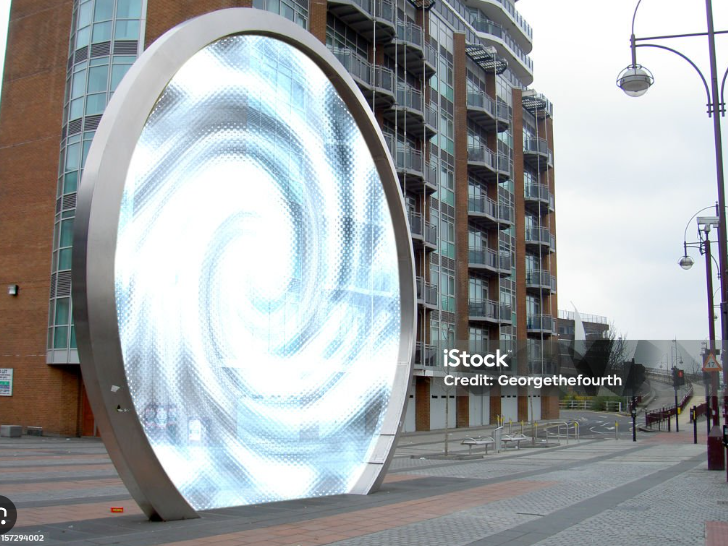